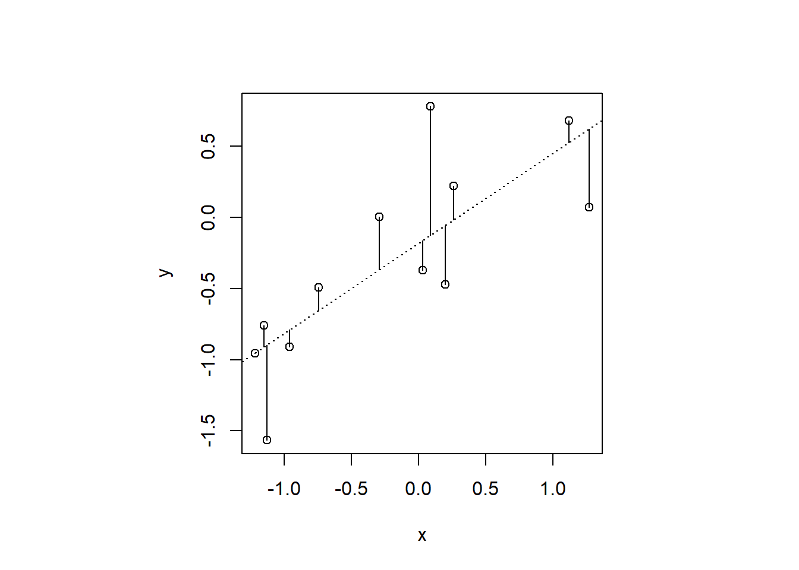
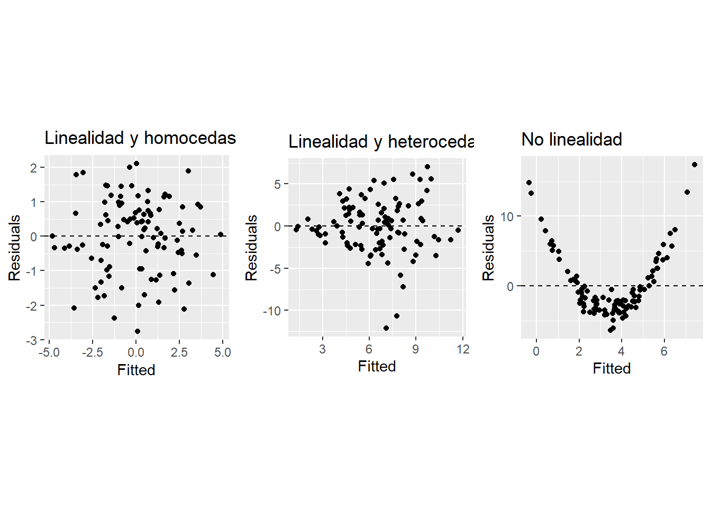
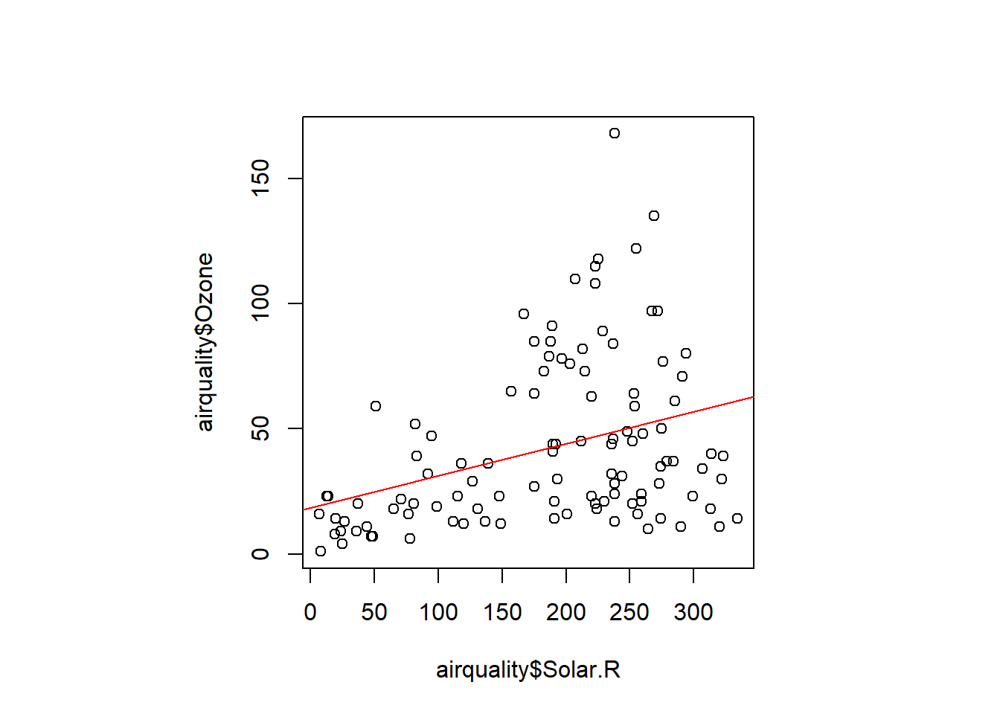

1 Modelos lineales
En este tema se estudian los denominados modelos lineales. El caso paradigmático es la regresión lineal simple, caso particular del modelo de regresión lineal múltiple. Los modelos de diseño de experimentos (que se estudian en el Capítulo 2) también son modelos lineales. En ambos modelos, la variable denominada respuesta debe ser cuantitativa/numérica continua, a diferencia del modelo lineal generalizado (que se estudian en el Capítulo 3).
Nota: Generalmente los modelos de regresión se basan en estudios observacionales recogiendo las variables de interés intentando no influir sobre las respuestas. Sin embargo, en un experimento se someten de forma deliberada los individuos a algún tratamiento (combinación de valores de variables) con el objetivo de observar sus respuestas. El diseño óptimo de experimentos (mi línea principal de investigación) combina el enfoque experimental con los modelos de regresión.
Un par de buenas referencias bibliográficas para este tema son: Peña (2002), concretamente la segunda parte, capítulos 5 a 10, y Faraway (2004), que conjuga contenido matemático y práctico en los capítulos 1 a 7. Otra referencia, con un enfoque más aplicado, es el capítulo 15 “Modelización lineal” de Casero-Alonso y Durbán (2024), https://cdr-book.github.io/cap-lm.html del libro “Fundamentos de Ciencia de Datos con R”, Fernández-Avilés y Montero (2024), que denominamos en el texto como CDR.
1.1 Modelo estadístico de regresión
Parafraseando a G.E.P. Box …Todos los modelos son falsos. Pero algunos son útiles… Es imposible describir la realidad de forma exacta mediante un modelo, pero puede ser útil utilizar un modelo aproximado, basado en los “datos”, que permita entender y explicar el fenómeno o experimento de interés. En matemáticas un modelo es una relación matemática, no necesariamente algebraica, que permite entender el fenómeno. En estadística, a los modelos matemáticos se les añade un término de error, para incluir lo que la parte estructural (algebraica) no es capaz de explicar. Este término de error se desea aleatorio, estocástico, y tiene el papel de “cajón de sastre”.
El modelo lineal de regresión lineal simple permite modelizar el comportamiento de una variable cuantitativa, denominada respuesta o dependiente, denotada por \(\mathbf{Y}\), mediante una función lineal de otra variable cuantitativa, denominada explicativa o predictora, \(\mathbf{X}\), que se supone está correlacionada con ella (correlación no implica causalidad). La forma habitual de expresar el modelo es: \[ \mathbf{Y} = \beta_0 + \beta_1 \mathbf{X} + \epsilon, \qquad \epsilon \sim N(0, \sigma^2)\]
donde \(\mathbf{Y} = (y_1, y_2, \ldots, y_n)^\top\) es el vector de las \(n\) observaciones de la variable respuesta, \(\mathbf{X} = (x_1, x_2, \ldots, x_n)^\top\) es el vector de las \(n\) observaciones de la variable explicativa, \(\beta_i \ (i=0 \ ó \ 1)\) son los coeficientes o parámetros del modelo, y \(\epsilon=(\epsilon_1, \epsilon_2, \ldots, \epsilon_n)\) es el vector de errores aleatorios que convierte el modelo determinista (\(\beta_0 + \beta_1 \mathbf{X}\)) en modelo estocástico. Los supuestos más habituales sobre el error son: tener media cero, varianza constante y seguir una distribución normal.
La generalización a varias variables explicativas es inmediata: \[ \mathbf{Y} = \beta_0 + \beta_1 \mathbf{X}_1 + \ldots + \beta_k \mathbf{X}_k + \epsilon, \qquad \epsilon \sim N(0, \sigma^2I).\] A este modelo se le denomina modelo lineal de regresión lineal múltiple.
En este contexto, cuando se habla de modelo lineal hay que distinguir entre modelo lineal en las variables y modelo lineal en los parámetros. Así:
- \(\mathbf{Y}=\beta_1 \mathbf{X}_1 + \beta_2 \mathbf{X}_2 + \epsilon\) es un modelo lineal en las variables y en los parámetros.
- \(\mathbf{Y}=\beta_1 \mathbf{X}_1 + \beta_2 \mathbf{X}_1^2 + \epsilon\) es un modelo lineal en los parámetros, pero no en la variable.
- \(\mathbf{Y} = \beta_1\mathbf{X}_1^{\beta_2} + \epsilon\) es un modelo no lineal tanto en los parámetros como en la variable.
En este material modelo lineal se refiere a lineal en los parámetros, sin que ello genere ambigüedad.
Utilizando notación matricial: \[\mathbf{Y} = \mathbf{X} \beta + \epsilon, , \qquad \epsilon \sim N(0, \sigma^2I) ;\]
\[\begin{bmatrix} y_1 \\ y_2 \\ \vdots \\ y_n \end{bmatrix} = \begin{bmatrix} 1 & x_{11} & x_{12} & \cdots & x_{1k} \\ 1 & x_{21} & x_{22} & \cdots & x_{2k} \\ \vdots & \vdots & \vdots & \ddots & \vdots \\ 1 & x_{n1} & x_{n2} & \cdots & x_{nk} \end{bmatrix} \begin{bmatrix} \beta_0 \\ \beta_1 \\ \vdots \\ \beta_k \end{bmatrix} + \begin{bmatrix} \epsilon_1 \\ \epsilon_2 \\ \vdots \\ \epsilon_n \\ \end{bmatrix},\] donde \(\mathbf{Y}\) vuelve a ser el vector de \(n\) respuestas, \(\mathbf{X}\) es ahora la matriz \(n\times(k+1)\) de variables explicativas, que contiene una columna de unos para incluir en el modelo el parámetro \(\beta_0\) que no depende de las variables explicativas, \(\beta\) es el vector de \(k+1\) parámetros del modelo y \(\epsilon\) vuelve a ser el vector de los términos de error aleatorios, con distribución normal, media cero y varianza constante, siendo \(I\) la matriz identidad.
Los modelos que se puedan expresar en la forma matricial anterior son modelos lineales.
Preguntas
En el modelo de regresión ¿tienen que ser todas las variables cuantitativas?
Respuesta corta: No.
Dependiendo del tipo de variables (\(\mathbf{X}\) e \(\mathbf{Y}\)) se tienen distintos modelos…
¿Y Si hay más de una variable \(\mathbf{Y}\)? Se habla de regresión múltiple multivariante, que se podrá ver en otra asignatura del grado.
1.1.1 Objetivos de la regresión
Describir la estructura general entre la(s) variable(s) explicativa(s) y la respuesta, estimando y evaluando su efecto.
Generalmente, este proceso es iterativo, hasta seleccionar la(s) variable(s) del mejor modelo posible (como se ve en el Capítulo 5).Predecir observaciones futuras.
Ambos objetivos pueden ser muy distintos! Bajo el prisma del “machine learning” suele relajarse la descripción estructural y evaluación de los efectos, dando toda la importancia a la mejor predicción posible.
1.1.2 Supuestos del modelo de regresión
Los supuestos en los que se basa el modelo de regresión expuesto son:
- Linealidad: la relación entre la(s) variable(s) explicativa(s) y la respuesta es lineal.
- Homocedasticidad (homogeneidad de varianzas): la varianza de la variable \(\mathbf{Y}\) para cada valor de \(\mathbf{X}_i\) (distribución condicionada) debe ser homogénea.
- Normalidad: tanto la variable \(\mathbf{Y}\) como los valores de \(\mathbf{Y}\) para cada valor de \(\mathbf{X}_i\) deben seguir una distribución normal.
- Independencia: cada observación de la variable \(\mathbf{Y}\) debe ser independiente de las demás.
Los supuestos anteriores se basan en las hipótesis de los errores:
- media cero: \(E[\epsilon]=0\),
- varianza constante: \(\text{Var}[\epsilon]=\sigma^2I\),
- distribución normal \(\epsilon \sim N(0, \sigma^2 I)\)
- independencia entre errores: \(E[\epsilon_i\epsilon_j]=0\)
Se puede encontrar más información sobre las también denominadas hipótesis básicas en Peña (2002) (apartados 5.2.1 y 5.2.2) y en Faraway (2004) (Capítulo 4)
Residuos
Los residuos, \(u_i\), son los errores observados para los datos y el modelo escogido (realizaciones de la variable aleatoria error \(\epsilon\)). Recogen toda la información que la estructura del modelo no ha sido capaz de asimilar. Es muy importante el estudio de los residuos para comprobar las hipótesis y supuestos anteriores y dar con ello validez al uso del modelo, como se ve en la Sección 1.2.9 a nivel teórico y en los casos prácticos (Sección 1.4 y Sección 1.5).
1.2 Modelo lineal de regresión simple
Es habitual comenzar el estudio de los modelos lineales con el caso más sencillo, el de regresión lineal simple, para profundizar en los detalles de cada uno de los pasos del proceso de modelización, estimación, validación y predicción. Posteriormente se señalarán los aspectos que cambian al pasar a la regresión lineal múltiple, que es el caso más habitual en la práctica.
Partiendo de los datos muestrales recogidos sobre el fenómeno de interés. ¿Cómo obtener el modelo de regresión lineal simple?
- Estructura: se deben identificar la variable respuesta (la que se pretende explicar) y la variable explicativa. Esta identificación define una forma estructural, que en este caso sencillo podría tener 2 formas:
- \(E(\mathbf{Y})=\beta_0 + \beta_1 \mathbf{X}\), la habitual (incluso diría “por defecto”) o
- \(E(\mathbf{Y})= \beta_1 \mathbf{X}\) (proporcionalidad directa, sin término independiente).
Estimación: con los valores muestrales recogidos \((x_i, y_i)\) se obtienen las estimaciones \(\hat{\beta}_i\) de los parámetros \(\beta_i\) del modelo preestablecido.
Validación: mediante el análisis de residuos se comprueban las hipótesis que validan el uso del modelo estimado.
Interpretación/Inferencia: validado el modelo se interpretan las estimaciones de los parámetros y su utilidad práctica. Sólo tendrá sentido interpretar aquellos que sean significativos. También, mediante algún indicador, se dará cuenta de la bondad del modelo para explicar la variable respuesta.
En este proceso, puede verse conveniente cambiar el modelo (en el caso de regresión simple, considerar otra variable explicativa, o aplicar alguna transformación) para intentar obtener un modelo que explique mejor la respuesta, con mayor bondad, por lo que se volvería al paso 1.Predicción: se obtienen las predicciones necesarias u oportunas a partir del modelo considerado, teniendo cuidado con la extrapolación (y, en algunos casos, también con la interpolación).
1.2.1 Estimación de los parámetros del modelo
En el caso más habitual de regresión simple: \(E(\mathbf{Y}) = \beta_0 + \beta_1\mathbf{X},\) se estiman los dos parámetros del modelo: \(\beta_0\), la ordenada en el origen y \(\beta_1\), la pendiente de la recta. Intuitivamente, se buscan las estimaciones \(\hat{\beta}_0\) y \(\hat{\beta}_1\) que “expliquen” la relación lineal entre las dos variables, aquellas que generen las mejores predicciones posibles: \[\hat{\mathbf{Y}} = \hat{\beta}_0 + \hat{\beta}_1\mathbf{X}\]
1.2.2 Método de mínimos cuadrados
El método por excelencia para obtener tales estimaciones es el método de mínimos cuadrados (1805 Gauss y Legendre). Consiste en minimizar los cuadrados de los residuos, \(u_i = y_i - \hat{y}_i = y_i - \hat{\beta}_0 + \hat{\beta}_1 x_i\), diferencia entre los valores observados y la predicción. Es decir, \[\min_{\hat{\beta}_0, \hat{\beta}_1} \sum u_i^2 = \min_{\hat{\beta}_0, \hat{\beta}_1} \sum(y_i - \hat{\beta}_0 - \hat{\beta}_1 x_i)^2.\]
Derivando, e igualando a cero se tiene un sistema lineal de 2 ecuaciones con 2 incógnitas, denominado ecuaciones normales: \[\left.\begin{align*} \dfrac{\partial \sum u_i^2}{\partial \beta_0} &= 0 \Rightarrow \sum_{i} u_i = 0 \\ \dfrac{\partial \sum u_i^2}{\partial \beta_1} &= 0 \Rightarrow \sum_{i} u_i x_i = 0 \end{align*} \right\rbrace\]
cuya solución es:
\[\begin{align*} \hat{\beta}_1^{MC} &= \rho \frac{S_y}{S_x}, \\ \hat{\beta}_0^{MC} &= \bar{y} - \hat{\beta}_1^{MC} \bar{x}, \end{align*} \] donde \(S_y\) y \(S_x\) son las desviaciones típicas muestrales de las variables \(\mathbf{Y}\) y \(\mathbf{X}\) y \(\rho\) es el coeficiente de correlación lineal de Pearson: \[\rho=\frac{S_{xy}}{S_x S_y}=\dfrac{\sum (x_i-\bar x)(y_i-\bar y )}{\sqrt{\sum (x_i-\bar x)^2 \sum (y_i-\bar y)^2}}.\]
Correlación
En la regresión lineal simple se espera que ambas variables estén correlacionadas, así, el modelo tendrá sentido práctico. El coeficiente de correlación lineal de Pearson, \(\rho\), mide la fuerza de la relación lineal entre las dos variables. Se puede expresar en función de las medias y las desviaciones típicas de las variables:
\[\rho=\frac{1}{n-1}\sum \left( \frac{x_i-\bar{x}}{S_x} \right) \left(\frac{y_i-\bar{y}}{S_y} \right)=\frac{1}{n-1}\sum z_x \cdot z_y\]
Los valores de este coeficiente se extienden de \(-1\) a \(1\), indicando ausencia de correlación cuanto más cercano a \(0\).
Hay que destacar el ejemplo ilustrativo del cuarteto de Anscombe, en el que 4 conjuntos de datos presentan el mismo valor del coeficiente de correlación lineal, pero su interpretación es muy distinta en cada uno de los 4 casos.
1.2.2.1 Interpretación geométrica
Los estimadores de mínimos cuadrados (MC) tienen una interpretación geométrica sencilla y gráficamente elocuente. Son aquellos que hacen que la recta de regresión simple minimice las distancias verticales (residuos) de toda la nube de puntos:
Ahora bien, también se puede representar el problema de MC en el espacio de las \(n\) observaciones (en lugar del espacio de 2 variables), lo que proporciona una interpretación geométrica interesante (véase Faraway (2004) apartado 2.3). La proyección ortogonal del vector \(\mathbf{Y}=(y_1, y_2, \ldots, y_n)^\top\) sobre el plano definido por los vectores \(\mathbf{1}\) y \(\mathbf{X}\) genera el vector de residuos \(\mathbf{u}\) perpendicular a ellos y a todos los vectores del plano. Además, aplicando el teorema de Pitágoras al triangulo rectángulo resultante de la proyección (Figuras 5.11 de Peña (2002) y 2.1 de Faraway (2004)) proporciona una forma alternativa de obtener la fórmula de la suma de cuadrados que se ve en la Sección 1.2.7.
1.2.3 Método de máxima verosimilitud
También se pueden estimar los parámetros del modelo mediante el método de máxima verosimilitud (MV), que consiste en maximizar la función de verosimilitud \(L(\beta)\). Suponiendo normalidad: \[L(\beta) = \log (2\pi)^{-n/2} \sigma^{-n} \exp\left[-\frac{\sum_{i=1}^{n} u_i^2}{2\sigma^2}\right]\] En Peña (2002), apartado 5.4.1, se puede ver el detalle de la obtención de los estimadores máximo verosímiles.
Bajo el supuesto de normalidad, los estimadores MC coinciden con los MV, es decir, los estimadores que minimizan la suma de cuadrados de los residuos, también maximizan la probabilidad de los datos observados. Basta observar la fórmula de la verosimilitud escrita arriba.
1.2.4 Estimación de la varianza del modelo
También es necesario estimar la varianza del modelo. Utilizando el método de máxima verosimilitud se llega a: \[\hat{\sigma}^2_{MV}=\dfrac{\sum u_i^2 }{n},\] es decir, es la varianza de los residuos (la dividida por \(n\)).
Ahora bien, los \(n\) residuos no son independientes, se pierden 2 grados de libertad al tener que estimar los dos parámetros de la recta de regresión. Por ello, se define el estimador denominado varianza residual: \[\hat S_R^2=\dfrac{\sum u_i^2 }{n-2}.\] En la práctica se suele obtener su raíz cuadrada, \(\hat S_R\), denominada error estándar residual.
1.2.5 Propiedades de los estimadores
El estudio de las propiedades de los estimadores obtenidos resulta de interés para la posterior inferencia. Aquí se mencionan algunas propiedades. El lector interesado puede ampliar información, por ejemplo, en Peña (2002) (la Tabla 5.3, página 264, contiene un buen resumen)
Antes de ello, la ecuación de la recta de regresión también se suele expresar en la forma punto-pendiente: \[(y - \bar{y}) = \hat{\beta}_1 (x - \bar{x}), \] de donde se deduce inmediatamente que el punto \((\bar x, \bar y)\), pertenece a la recta estimada. Tal punto se conoce como centroide, centro de gravedad de la nube de puntos.
Sobre \(\hat \beta_1\), la pendiente estimada de la recta. Esta pendiente se puede obtener como una media ponderada de pendientes de las rectas que pasan por cada punto y por centroide. Tal ponderación está relacionada con el leverage (véase Sección 1.2.12) e implica que los puntos con valores de \(x\) más alejados a la media tienen más influencia sobre la estimación de \(\beta_1\), más cuanto menos puntos sean. También se puede ver que el estimador sigue una distribución normal, si la variable respuesta sigue una distribución normal, concretamente, \[\hat \beta_1 \sim N(\beta_1, \dfrac{\sigma^2}{nS_x^2}).\] Por lo tanto, es insesgado (asumiendo la linealidad, independientemente de la normalidad) y su varianza disminuirá (aumentará la precisión de \(\hat\beta_1\)), bien al aumentar el tamaño de muestra, \(n\), o al aumentar la dispersión de los valores de \(x\), \(S_x^2\). Como \(\sigma^2\) es desconocida, se considera en su lugar la varianza residual \(\hat S_R^2\).
Sobre \(\hat \beta_0\), mencionar que es el parámetro de la ordenada en el origen (intersección de la recta con el eje \(y\)) y su importancia se encuentra en un segundo plano respecto a \(\hat \beta_1\). También se puede ver como una combinación lineal de valores de la variable respuesta, por lo que seguirá una distribución normal (como la variable respuesta), concretamente, \[\hat \beta_0 \sim N \left( \beta_0, \dfrac{\sigma^2}{n} \left( 1+ \dfrac{\bar x^2}{S_x^2}\right) \right).\] También es insesgado, y su varianza está multiplicada por \(\bar x^2\), lo que supone mayor impacto cuando mayor sea el valor de \(\bar x\).
Además, ambos estimadores están correlacionados: \[\text{Cov}(\hat{\beta}_0, \hat{\beta}_1) = -\dfrac{\bar{x}\sigma^2}{nS_x^2}\] Por lo tanto, cuando \(\bar{x}>0\), \(\hat{\beta}_0\) y \(\hat{\beta}_1\) están negativamente correlados.
Respecto a la varianza residual, se tiene que \(\hat S_R^2\) es un estimador insesgado de \(\sigma^2\), dado que \[\dfrac{(n-2) \hat S_R^2}{\sigma^2} \sim \chi^2_{n-2}.\]
1.2.6 Contrastes de hipótesis
Conocidas las distribuciones en el muestro de los estimadores, podemos plantear contrastes de hipótesis sobre ellos. En una regresión lineal simple, realizar un contraste de hipótesis sobre el parámetro \(\beta_1\) asociado a la variable explicativa, es equivalente al contraste de hipótesis sobre el coeficiente de correlación lineal de Pearson entre dicha variable y la respuesta, \(\rho\): \[\left. \begin{array}{ll} H_0: \beta_1 = 0 \\ H_1: \beta_1 \neq 0 \end{array} \right\rbrace \qquad \equiv \qquad \left. \begin{array}{ll} H_0: \rho = 0 \\ H_1: \rho \neq 0 \end{array} \right\rbrace\]
Para parejas de variables normales e incorreladas se cumple que: \[\rho\sqrt{\frac{n-2}{1-\rho^2}} \sim t_{n-2} \qquad \equiv \qquad \dfrac{\hat \beta_i - \beta_i}{\hat s(\hat \beta_i)} \sim t_{n-2}\] donde \(\hat s(\hat \beta_i)\), es el estimador de la desviación típica del estimador. Esto también se cumple de forma aproximada si las variables son no normales y si los tamaños de muestra son “grandes” (o no demasiado pequeños). Y de aquí podemos determinar la significación de la estimación del parámetro \(\hat \beta_1\) (de una correlación). El p-valor nos dará la fuerza de dicha significación.
1.2.7 Suma de Cuadrados en la regresión
Al contraste de hipótesis anterior también puede llegarse desde otro punto de vista. Los residuos, distancias verticales entre cada uno de los puntos, \((x_i,y_i)\), y la recta de regresión, expresan el error aleatorio del modelo. ¿Hasta qué punto es más importante el efecto de la variable \(\mathbf{X}\) sobre la variable \(\mathbf{Y}\) que el error de los residuos?
Si las variables \(\mathbf{X}\) e \(\mathbf{Y}\) no estuviesen relacionadas, no aportaría información sobre \(\mathbf{Y}\) conocer los valores de \(\mathbf{X}\). La mejor predicción que podríamos hacer sería predecir \(\mathbf{Y}\) con su media, \(\bar{\mathbf{Y}}\), sin tener en cuenta el valor de \(\mathbf{X}\). Este modelo (\(\beta_1 = 0\)), el más sencillo, es el que vamos a intentar falsar.
El estudio de la variabilidad (información) de la variable respuesta nos aportará evidencias que nos permitan (o no) rechazar \(H_0: \beta_1 = 0\) (falsarla) y asumir la hipótesis alternativa, \(H_1 : \beta_1 \neq 0\).
\[SC_{total}=SC_y=\sum (y_i-\bar{y})^2\]
\(SC_{total}\) es el numerador de la habitual varianza muestral aplicada a \(y\). Se puede calcular multiplicando dicha varianza por los grados de libertad \(n-1\).
Matemáticamente se puede descomponerse en \(SC_{regresion}\) y \(SC_{residual}\).
\[SC_{total}=SC_{regresion}+SC_{residual}\] \[\sum (y-\bar{y})^2={\sum (\hat{y}-\bar{y})^2}+\sum (y-\hat{y})^2\]
Estudiamos los grados de libertad (gl) al calcular cada uno de los términos:
- Para \(SC_{total}\) “gastamos” \(1\) gl al dar la media, \(\bar{y}\), por lo que tiene \(n-1\) gl.
- Los gl de los residuos son \(n-2\), necesitamos \(\hat{\beta}_0\) y \(\hat{\beta}_1\) para calcular \(SC_{residual}\).
- Con lo que nos queda \(1\) gl para la suma de cuadrados de la regresión \(SC_{regresion}\). “Gastamos” \(1\) gl con el parámetro extra que hemos estimado \(\hat{\beta}_1\), la pendiente.
Por último, se promedia cada suma de cuadrados por sus respectivos grados de libertad (SCM: Suma de Cuadrados Media), en definitiva, calculamos varianzas.
Nunca seremos capaces de realizar predicciones perfectas (todos los modelos son falsos), pero estamos interesados en comparar el efecto de \(\mathbf{X}\) sobre \(\mathbf{Y}\) con el error aleatorio (residual):
\[\frac{\text{Efecto de X sobre Y}}{\text{Error Aleatorio}}=\frac{\text{Varianza de la Regresión}}{\text{Varianza Error}}=\frac{SCM_{regresion}}{SCM_{error}}=F \sim F_{1,n-2}\]
Esto se conoce en estadística como un Análisis de la Varianza, ANOVA (que se ve más en profundidad en el Capítulo 2).
Para que podamos falsar \(H_0\), la Varianza de la Regresión debe ser mayor que la Varianza del Error, cuanto más grande mejor. Si ambas son próximas se concluye que \(\beta_1\) puede ser 0.
Se compara entonces el estadístico F obtenido de dividir las dos varianzas con una distribución F con los grados de libertad correspondientes, \(1\) en el numerador y \(n-2\) en el denominador. Calculando el p-valor se podrá rechazar (o no) la hipótesis nula, concluyendo (o no) que \(\beta_1\) es significativamente distinto de 0.
Es importante resaltar aquí el supuesto de linealidad. No rechazar \(H_0\) no implica necesariamente que \(x\) e \(y\) sean independientes, podrían estar relacionadas de forma no lineal, y la aproximación lineal podría no ser significativa.
En Peña (2002), Apartado 5.6.2, se descompone las desviaciones de los datos (usando notación matricial) en dos componentes ortogonales. Por el teorema de Pitágoras se llega a la descomposición de la variabilidad descrita aquí. Además, en el Apéndice 5B, se dan detalles sobre la “Deducción de las distribuciones de sumas de cuadrados”.
1.2.8 Bondad de ajuste: Coeficiente de Determinación, \(R^2\)
Por la descomposición mencionada anteriormente, \(SC_{total}=SC_{regresion}+SC_{residual}\), la proporción de variabilidad explicada por la regresión, respecto al total, es un indicador de la bondad de la regresión:
\[\frac{SC_{regresion}}{SC_{total}} = R^2,\]
lo que se conoce como coeficiente de determinación, \(R^2\). Como proporción, puede tomar valores entre \(0\) y \(1\), evitando así la dependencia de las unidades de medida. Suele expresarse en porcentaje.
La siguiente figura permite ilustrar el concepto de bondad de ajuste.
En la gráfica de la izquierda se tiene un buen ajuste de la recta de regresión, que produce un \(R^2\) elevado. Mientras que en la gráfica de la derecha el \(R^2\) es próximo a cero, indicando que el conocimiento de los valores de \(\mathbf{X}\) aporta casi nula información sobre los valores de variable \(\mathbf{Y}\). Para más énfasis, en la imagen de la izquierda se muestra la variabilidad total de \(\mathbf{Y}\) frente a la variabilidad que tiene \(\mathbf{Y}\) para casi cualquier valor de \(\mathbf{X}\).
Obtención del coeficiente
En el caso de la regresión lineal simple, \(R^2\) coincide con el cuadrado del coeficiente de correlación, \(\rho\) (véase Peña (2002), apartado 5.7.1, donde se dan detalles de cómo llegar al coeficiente de correlación a partir del de determinación, o a partir de la varianza residual).
1.2.9 Diagnosis
La diagnosis consiste en comprobar los supuestos básicos del modelo (Sección 1.1.2). Recordemos: linealidad, homocedasticidad, normalidad e independencia.
En la regresión simple, los supuestos de linealidad y homocedasticidad se pueden comprobar visualmente acudiendo al diagrama de dispersión. En la regresión múltiple, no es tan directo. Se acude directamente a los gráficos de diagnóstico, basados en los residuos del modelo, para comprobar las hipótesis. Con la ayuda de R será bastante sencillo obtener tales gráficos. Por lo que, en la práctica, se comprueban las hipótesis (y alguna característica más) en ellos. Ahora bien, el supuesto de independencia podría incumplirse por construcción, por ejemplo, si se tienen datos temporales.
Un enfoque ligeramente distinto sobre la diagnosis se encuentra en Faraway (2004), que divide los problemas potenciales de la regresión estimada en 3 categorías:
- error: se asume que los errores son independientes, tienen varianza constante y son normalmente distribuidos.
- modelo: se asume que la parte estructural del modelo es correcta, es decir, que la relación entre las variables es lineal.
- observaciones inusuales: en ocasiones unas pocas observaciones no se ajustan al modelo, o cambian/influyen demasiado en el modelo.
Además indica que las técnicas gráficas de diagnóstico son más flexibles, pero mucho más difíciles de interpretar, que las de contrastes, que son sencillas y directas (no requieren de intuición y podrían parecer más precisas), pero no permiten una visualización general del problema. La diagnosis gráfica de los residuos permiten detectar problemas, revelar estructuras ocultas que es imposible vislumbrar con los contrastes, lo que da pistas para solucionar los problemas de la regresión, llevando la modelización a un proceso iterativo, con cierto aire artesanal. Por ello, predomina un enfoque gráfico para el diagnóstico, acudiendo a los contrastes como complemento para confirmar lo observado en los gráficos. En ocasiones los gráficos pueden ser ambiguos, pero al menos permiten verificar que no hay grandes desviaciones de los supuestos del modelo.
1.2.9.1 Linealidad
Como se ha comentado, el modelo asume una estructura lineal en la relación entre el predictor y la respuesta, que puede observarse fácilmente con el gráfico de dispersión entre ambas variables.
Ahora bien, en la práctica, cuando se estima el modelo con software, es fácil tener los residuos y comprobar esta hipótesis en el correspondiente gráfico de diagnóstico. Concretamente, a partir del gráfico de residuos frente a valores estimados por el modelo, para cada valor observado. En líneas generales, si la relación lineal es la correcta se observará aleatoriedad, valores dispersos entorno al 0 (verticalmente), sin tendencias ni otros patrones marcados (véase el gráfico del apartado siguiente de Homocedasticidad).
El contraste de linealidad es el de la tabla ANOVA, por lo que no se entrará aquí en más detalles de los ya vistos.
1.2.9.2 Homocedasticidad
Los residuos deben tener varianza constante, homocedasticidad, con respecto a los valores de la variable \(x\), en el caso de regresión simple (por lo que se puede comprobar en el gráfico de dispersión entre \(x\) e \(y\)). La falta de homocedasticidad invalida el uso de los estimadores MC/MV pues implica distinta precisión en las estimaciones.
Análisis gráfico
El gráfico de diagnóstico apropiado para observar la homocedasticidad o heterocedasticidad es el de residuos frente a valores estimados por el modelo (el mismo que para la linealidad, que es también válido para el caso de regresión múltiple). De nuevo se desea observar aleatoriedad, ausencia de patrones.
En el siguiente gráfico se pueden ver ejemplos simulados de distintas situaciones, que se interpretan de una forma clara. Pero la realidad supera la ficción… Se necesita cierta experiencia para no cometer equivocaciones al interpretar gráficos de residuos.

Lo deseable en este gráfico es encontrar una nube de puntos dispersos (y simétricos, mirando verticalmente) alrededor de 0, sin ningún patrón aparente (como en el primer gráfico). Si se observa un patrón, como una forma cónica (segundo gráfico) o una tendencia (como la no lineal del tercer gráfico), puede indicar problemas de heterocedasticidad (varianza no constante) o no linealidad en el modelo. Estas dos últimas situaciones dan pistas de las posibles acciones a tomar sobre los datos, como transformar la variable \(x\) o \(y\) para conseguir homocedasticidad, o incluir algún término no lineal en la variable \(x\) (manteniendo el modelo lineal en los parámetros). Por su parte, el primer gráfico permitiría validar gráficamente el supuesto de homocedasticidad.
Como se ve en los casos prácticos (Sección 1.4 y Sección 1.5), se suele también comprobar la homocedasticidad en el gráfico de la raíz cuadrada del valor absoluto de los residuos estandarizados (véase Sección 1.2.12) frente a los valores estimados. Al tomar el valor absoluto se aumenta la resolución para detectar la falta de homocedasticidad. Ahora bien, no permite la comprobación de la nolinealidad.
Una alternativa, más elaborada, es la propuesta de Faraway (2004): dibujar los residuos frente a cada una de las \(x_i\) -en caso de regresión múltiple-. Para todas la variables del conjunto de datos, tanto las incluidas en el modelo, como las no incluidas, mirando en estas últimas si existe alguna relación que indique la necesidad de incluirla en el modelo.
Contrastes
Los contrastes para detectar heterocedasticidad, tienen una hipótesis nula clara: \[H_0: \sigma^2 = \text{cte}, \] Pero dependen de la hipótesis alternativa especificada. Así, el contraste puede detectar bien un tipo específico de heterocedasticidad, pero no tener potencia suficiente para otros.
De entre los distintos contrastes para comprobar la homocedasticidad destacan, el contraste de Bartlett y el de Levene, que evalúan la hipótesis nula de igualdad de varianzas entre \(k\) grupos. Los estadístico de contraste se pueden encontrar en la página web del NIST/SEMATECH e-Handbook of Statistical Methods, concretamente: contraste de Bartlett y contraste de Levene, respectivamente. El estadístico de Bartlett sigue aproximadamente una distribución \(\chi^2\) con \(k - 1\) grados de libertad bajo \(H_0\). Mientras que el de Levene sigue aproximadamente una distribución \(F\) con \(k-1\) y \(n-k\) grados de libertad. En ambos casos, se rechazará la homocedasticidad si se obtienen p-valores pequeños, habitualmente inferiores a 0.05.
1.2.9.3 Normalidad
Los residuos también deben seguir una distribución normal, para justificar el uso de estimadores MC/MV.
El gráfico apropiado para evaluarlo es el denominado Q-Q plot (gráfico Cuantil-Cuantil): un diagrama de dispersión de los cuantiles de los residuos frente a los cuantiles de la distribución normal (con la misma media y desviación típica de los residuos). La interpretación, como diagrama de dispersión, es bien sencilla, los residuos siguen una distribución normal cuanto más se alineen los puntos del diagrama sobre una linea recta “guía” (y más diagonal sea dicha “guía”). Se incumple la normalidad generalmente por las colas, con puntos que se alejan ostensiblemente de la recta “guía”. Por ejemplo, es típico observar curvatura en forma de S, indicando que los residuos tiene colas más ligeras que la distribución normal, o curvatura en forma de U indicando que siguen otra distribución.
Contrastes
Para completar la comprobación gráfica, se acude a los contrastes de normalidad. El más difundido es del de Shapiro-Wilk, basado precisamente en el gráfico Q-Q, y considerado uno de los que más potencia poseen para contrastar normalidad. \[\left. \begin{array}{ll}
H_0: \text{los residuos provienen de una distribución normal} \\
H_1: \hspace{1.4cm}\text{... no provienen...}
\end{array} \right\rbrace\] Para más información sobre el test de Shapiro-Wilk se puede consultar también la web del NIST/SEMATECH e-Handbook of Statistical Methods: Shapiro-Wilk test. En este caso, el estadístico de contraste no sigue una distribución de probabilidad conocida y sus probabilidades se han calculado mediante simulaciones por el método de Monte Carlo.
1.2.9.4 Independencia
La independencia es un supuesto que puede comprobarse con los gráficos de residuos, pero que puede incumplirse desde el planteamiento del problema, de la recogida de datos, etc. sin necesidad de llegar al análisis de residuos, en el que incluso podría no quedar reflejado el incumplimiento.
Para comprobar la independencia temporal de los datos se visualizará el gráfico de residuos frente al orden en la toma de datos (si se dispone de ello), o, en su defecto, en el orden que se tengan los datos (que podrían haber sido ordenados, lo que impediría su correcto análisis).
Contrastes
Como en los anteriores supuestos, se suele acudir a contrastes para completar el análisis de independencia. El más utilizado es el de Durbin-Watson, que comprueba la presencia de autocorrelación (relación temporal entre los residuos). \[\left. \begin{array}{ll}
H_0: \text{los residuos no tienen correlación temporal} \\
H_1: \text{los residuos siguen un proceso autorregresivo de primer orden, } AR(1) \end{array} \right\rbrace\] Más información en Estadístico de Durbin–Watson.
1.2.9.5 Soluciones
Como se ha comentado, la comprobación de los supuestos mediante los gráficos de residuos, a la par que pueden conducir a rechazar uno o varios de ellos, pueden proporcionar pistas para su solución.
Lo primero que suele saltar a la vista en el análisis gráfico es la presencia de observaciones atípicas, que contribuyen a la falta de linealidad, de homocedasticidad, ambas… Lo apropiado es analizar el impacto de dichas observaciones, por ejemplo, comparando los modelos estimados con tales observaciones o sin ellas. Para ello, se han desarrollado medidas como el leverage y la distancia de Cook, para averiguar la influencia de las observaciones (sean atípicas o no) en la regresión (véase Sección 1.2.12). El resultado de este análisis puede llevar a detectar errores de medición, o que la definición funcional (como forma lineal) del problema no es la adecuada.
Otra posible solución para obtener linealidad y/o homocedasticidad es realizar transformaciones en las variables, bien \(y\), bien \(x\), o ambas (véase Sección 1.2.13). Por ejemplo, la relación entre la variable \(y\) y la \(x\) podría ser exponencial, por lo que, tomando como respuesta \(\log(y)\) se tendrá linealidad. Sobre la heterocedasticidad, en ocasiones se da por la dependencia de la varianza de \(y\) respecto de \(x\). Si se dividen las observaciones por la estructura que provoque \(x\) en la varianza, se tendrá un modelo homocedástico. En la práctica, el gráfico de residuos frente a valores estimados puede dar pistas sobre la transformación a realizar. Pero, se suelen intentar varias transformaciones, pues es un arte encontrar la transformación más adecuada (la intuición y la experiencia pueden ayudar).
Un caso más complejo de intuir es la introducción de variables para conseguir linealidad, bien puede ser, términos polinomiales de la misma variable, lo que conduce a una regresión polinómica lineal (véase Sección 1.5.3), o bien, se pueden añadir otras variables, lo que lleva a un modelo lineal de regresión múltiple (véase Sección 1.3). Otras opciones de resolver los problemas por incumplimiento de los supuestos básicos pasan por acudir a regresión no paramétrica (que se escapa del alcance de este material) o, en el caso de la heterocedasticidad, aprovechar si se conoce la estructura de varianza para utilizar el método de mínimos cuadrados ponderados.
1.2.10 Interpretación de la recta de regresión
Una vez estimada y validada la recta de regresión, si es significativa, estadísticamente hablando, se puede pasar a interpretar los coeficientes/parámetros, si tienen un sentido práctico (y el análisis de residuos que se ve más adelante no invalida los supuestos en los que se basa).
La interpretación generalmente más importante es la de \(\hat \beta_1\) dado que recoge el efecto sobre la variable \(y\) de la variación de una unidad de la variable explicativa \(x\). Su interpretación debe hacerse acorde a las unidades en la que esté recogida la variable (no es lo mismo que, si es una medida de temperatura, se haya medido en ºC que en ºK, o si es de tiempo que se mida en segundos o en días). Así el impacto sobre la respuesta del cambio de \(1\) ºC (o de \(1\) s) será de una magnitud muy distinta al cambio de 100ºC (\(1\) hora). Es más, el valor de \(\hat \beta_1\) se podría aumentar o disminuir haciendo cambios de escala en las variables \(y\) y \(x\).
¿Y qué pasa si en lugar de tener sólo una variable tenemos más variables? En el apartado de regresión múltiple (Sección 1.3), se ve el cambio que supone el tener varias variables explicativas, en la interpretación de las estimaciones de los parámetros.
La interpretación de la estimación \(\hat \beta_0\) es el del valor medio en ausencia del valor de la \(x\), que en ciertas ocasiones no pertenece al rango de variación de la variable \(x\) o puede no tener sentido (por ejemplo si la variable \(x\) recoge la edad de los individuos, puede que no tenga sentido la media a \(0\) años).
Si la recta no fuese significativa, no implica que no haya relación entre \(x\) e \(y\), quizá la relación es no lineal (como se ve en Sección 1.2.9) o quizá el rango escogido para la \(x\) no es el idóneo para observar su influencia sobre la \(y\) (quizá es demasiado estrecho). Pero, como se señala en Peña (2002), para encontrar relaciones causales hay que acudir al diseño de experimentos (Capítulo 2), porque en un experimento se puede intentar controlar los valores de la variable \(x\) que se cree que influyen sobre la \(y\) y aleatorizar el resto de variables para “repartir” su impacto sobre la respuesta. Mientras que si los datos son observacionales sólo se puede deducir covariación, pero no causalidad, como que haya más criminalidad en las ciudades con más policías. Aquí la causa es una tercera variable, el tamaño de la ciudad. Reducir el número de policías ¡no causaría una reducción de la criminalidad!
1.2.11 Predicción
Uno de los objetivos de la modelización es la posibilidad de poder predecir valores de la variable respuesta conocidos los valores de la variable explicativa.
Dichas predicciones pueden ser de dos tipos, predicciones medias, para la media de un conjunto de observaciones con el mismo valor del predictor, o predicciones individuales, para un sólo valor de la variable respuesta para un valor del predictor. Realmente, la predicción será la misma, la dada por la recta de regresión, pero la incertidumbre o precisión de dicha estimación, esto es, el intervalo de confianza, será distinto según se trate de la predicción de una media o un valor individual. Los intervalos de confianza para las predicciones individuales son más amplios que para los intervalos de confianza de la recta.
Para todo ello es fundamental estudiar el error estándar de la pendiente y de la ordenada en el origen (en el caso de regresión lineal).
1.2.11.1 Errores estándar de los estimadores
De las propiedades obtenidas anteriormente para los estimadores de los parámetros del modelo, se puede proporcionar con ellos intervalos de confianza sobre tales parámetros. Concretamente, como \(\hat \beta_i\) sigue una distribución normal \[\hat \beta_i \pm t_{gl,\alpha/2} \cdot \hat s(\hat \beta_i)\] donde \(gl\) son los grados de libertad, \(\alpha\) es el nivel de significación escogido de antemano y \(\hat s(\hat \beta_i)\), es el estimador de la desviación típica del estimador, también conocido como error estándar del estimador, que depende de la varianza residual.
El error estándar de la pendiente, \(\beta_1\) es: \[\hat s (\hat \beta_1)=\sqrt{\dfrac{\hat S_R^2}{nS_x^2}}=\sqrt{\frac{SC_{residual}/n-2}{SC_x}}\] Y para la ordenada en el origen, \(\beta_0\): \[\hat s (\hat \beta_0)=\sqrt{\frac{SC_{residual}}{n-2} \left( \dfrac{1}{n} + \dfrac{ \bar x^2}{SC_x}\right)}\]
Y podemos calcular intervalos de confianza tanto para la pendiente como para la ordenada en el origen.
Ahora bien, es más interesante poder calcular el error estándar y, con ello los intervalos de confianza, para las predicciones:
\[\hat s(\hat y) = \sqrt{\frac{SC_{residual}}{n-2} \left( \frac{1}{n}+\frac{(x_i-\bar{x})^2}{SC_x} \right)}\]
\[(\hat \beta_0 + \hat \beta_1\cdot x_i) \pm t_{n-2, \alpha/2} \cdot \hat s (\hat{y})\]
Con R será inmediato obtener intervalos de confianza para predicciones del modelo (tanto de la recta, como predicciones individuales). Algunos paquetes incluyen en los gráficos de regresión bandas de confianza para la respuesta media, \(\hat y\), para cada valor individual \(x_i\), habitualmente del 95%, que significa que tenemos una confianza de ese 95% en que la verdadera recta de regresión está en esa región marcada.
1.2.12 Observaciones influyentes
Se sabe que, cuanto más alejado de su media esté el valor \(x_i\) observado más influencia tendrá sobre la pendiente de la recta de regresión. Sobre todo si no concuerda su pendiente respecto a la media, con la pendiente marcada por el resto de valores, y más si es un valor atípico.
Leverage
El leverage (efecto palanca) es una medida necesaria para medir dicha influencia. En el caso de regresión lineal simple se puede calcular como: \[h_i = \dfrac{1}{n} + \dfrac{(x_i - \bar x)^2 }{\sum_{j=1}^n(x_j - \bar x)^2 } \] Observando la fórmula se deduce que el leverage toma valores entre \(1/n\) (cuando \(x_i=\bar x\)) y \(1\) (cuando \(x_i\) esté muy alejado de \(\bar x\), véase Peña (2002) para detalles sobre esta acotación superior). A mayor leverage mayor influencia sobre la pendiente de la recta de regresión.
Residuos estandarizados
Una observación con un valor de leverage próximo a \(1\) puede hacer que la recta de regresión pase por tal observación (además de pasar por el centroide, \((\bar x, \bar y)\)). Este hecho implica que en las observaciones con alto leverage, el residuo y su varianza son pequeños, mientras que en las observaciones cercanas a la media, el leverage es bajo y puede que su residuo y varianza sean más grandes. Por ello se suelen definir los residuos estandarizados: \[r_i = \dfrac{u_i}{\hat S_R \sqrt{1-h_i}}\] que siguen una distribución normal tipificada, si las hipótesis del modelo son ciertas. Generalmente, los programas de software estadístico calculan estos residuos estandarizados y dibujan algunos gráficos de residuos con ellos.
Distancia de Cook
La distancia de Cook es la medida de influencia utilizada en la práctica. Se basa en medir el cambio en la recta de regresión al eliminar la observación \(i\). Viene dada por: \[D_i = \dfrac{(\hat y_i - \hat y_{-i})^2}{2\hat S_R^2 h_i}\] donde:
- \(\hat y_i\) es la estimación para la observación \(i\)-ésima, basada en todos los datos,
- \(\hat y_{-i}\) es la estimación para la observación \(i\)-ésima, basada en todos los datos menos el \(i\)-ésimo.
Con esta medida, un punto es influyente si \(D_i>1\). Los puntos con alto leverage pueden ser influyentes, pero no lo son siempre, por lo comentado al principio, si no concuerda su pendiente respecto a la pendiente marcada por el resto serán influyentes, pero si concuerda, no lo serán.
Un ejemplo aclarador podría ser el de dos variables claramente relacionadas. Pongamos por ejemplo, el PIB per cápita y la emisiones de CO2 de diferentes países. Se tendría una nube de puntos que indicase que a mayor PIB, mayores emisiones. Si el dato del PIB de uno de los países es muy grande (alejado de la media), y sus emisiones también son altas y acordes a la recta determinada por el resto de países, dicho país tendrá un alto leverage, pero su distancia de Cook no será mayor que 1. Por el contrario, si su valor de emisiones es muy distinto al que estimaría la recta determinada por el resto de países (sea dicho valor de emisiones mucho mayor o mucho menor), dicho país tendrá alto leverage y también alta distancia de Cook.
1.2.13 Transformaciones
Como se ha mencionado, puede ser útil transformar las variables para conseguir una relación lineal entre ellas, o conseguir homocedasticidad… Y así poder ajustarse con estas técnicas de modelos lineales. Por ejemplo si hay una relación exponencial entre las variables \(\mathbf{X}\) e \(\mathbf{Y}\), se puede aplicar el logaritmo a \(\mathbf{Y}\) linealizando así el modelo. O si la relación es potencial, considerar una potencia de la variable \(\mathbf{X}\): un modelo lineal de regresión no lineal. El tomar un modelo más complejo sólo tiene sentido si produce resultados significativos a la hora de explicar la relación. Ahora bien, hay que tener en cuenta que estas transformaciones pueden alterar la interpretación de los parámetros.
En la práctica, a la hora de transformar la variable respuesta, se acude a la familia de transformaciones Box-Cox, definida como: \[ y^{(\lambda)} = \begin{cases} \frac{y^\lambda - 1}{\lambda}, & \lambda \ne 0 \\ \ln y, & \lambda = 0 \end{cases} \]
Y cuyos casos particulares se esquematizan en la siguiente tabla:
| \(\lambda\) | Transformación | Nomenclatura |
|---|---|---|
| \(1\) | \(y\) | Identidad |
| \(1/2\) | \(\sqrt{y}\) | Raíz cuadrada |
| \(0\) | \(\log y\) | Logaritmo natural |
| \(-1/2\) | \(\frac{1}{\sqrt{y}}\) | Inversa de la raíz cuadrada |
| \(-1\) | \(\frac{1}{y}\) | Inversa |
Estas transformaciones pueden conseguir linealidad siempre que la relación entre las variables sea monótona. Un pequeño detalle es tener en cuenta que transformaciones como la raíz cuadrada o el logaritmo no funcionan si la variable respuesta \(y_i\) toma valores negativos, pero se puede subsanar considerando \(y_i+\delta\) para evitarlo (aunque se pierde la interpretación directa de los resultados).
En ocasiones, no sólo es necesario la transformación de la variable respuesta, sino también de la explicativa. Y hay que tener en cuenta los efectos secundarios que pueden producir, por ejemplo, precaución con la interpretación de las estimaciones de los parámetros, sesgos en las predicciones, etc.
1.3 Modelo lineal de regresión múltiple
Cuando se dispone de más variables que podrían explicar la respuesta, entonces podemos plantear un modelo múltiples variables explicativas
Desde el punto de vista estadístico, surgen unas cuantas preguntas:
- ¿Qué variables incluir en el modelo?
- ¿Están dichas variables explicativas correlacionadas entre ellas?
- ¿O interaccionan entre sí?
- ¿Hay curvatura en la respuesta?
- …
Por ello, la regresión múltiple tiene más retos que la simple. Entre otros:
- Es muy habitual tener demasiadas variables explicativas. Hay que seleccionar cuidadosamente cuáles incluir (se ve en Capítulo 5)
- También el tener pocas observaciones, valores de la variable respuesta, frente al número elevado de parámetros del modelo… más si hay interacciones, si no se dispone de todas las combinaciones posibles de las variables explicativas, etc. Puede hacer que el modelo sea inestimable (Sección 1.3.4).
- Si hay correlación entre las variable explicativas, entonces aportan información redundante. Se puede detectar (Sección 1.3.5) y tratar de solucionar (Capítulo 5).
- Si hay curvatura se debe acudir a modelos lineales, pero de regresión no lineal (Sección 1.5.3).
- La mayor parte de los estudios son observacionales, no experimentales (Capítulo 2).
- …
Recordemos, …Todos los modelos son falsos… Equivalentemente, el modelo perfecto y exacto no existe. Pero, algunos modelos son mejores que otros, y, en un modelo, la sencillez es un acierto (principio de parsimonia).
Tipos de modelos:
- Saturado: Mismo número de observaciones que de parámetros. Ajuste perfecto. Grados de libertad 0.
- Maximal: Contiene p variables y sus interacciones. Muchos de estos términos son despreciables. Grados de libertad \(n-p-1\).
- Minimal y Adecuado: Contiene las variables e interacciones significativas. Grados de libertad \(n - p'-1\).
- Modelo Nulo: Un único parámetro, \(\beta_0 = \bar{y}\). Grados de libertad \(n-1\).
1.3.1 Estimación MC
En Faraway (2004), apartado 2.4, y en Peña (2002), apartado 7.3.2, se puede ver la obtención del estimador MC para los parámetros del modelo de regresión lineal múltiple. Es la solución de las ecuaciones normales: \[\mathbf{X}^\top \mathbf{X} \boldsymbol{\beta} = \mathbf{X}^\top \mathbf{Y} \quad \Longrightarrow \quad \hat{\beta}=(\mathbf{X}^\top \mathbf{X})^{-1}\mathbf{X}^\top\mathbf{Y}\] siempre que \(\mathbf{X}^\top \mathbf{X}\) sea invertible.
Sale a relucir la matriz \(H=\mathbf{X}(\mathbf{X}^\top \mathbf{X})^{-1}\mathbf{X}^\top\), denominada matriz de proyecciones (hat-matrix, que es idempotente y simétrica), pues es la proyección ortogonal de \(\mathbf{Y}\) en el espacio generado por las \(\mathbf{X}\). Con esta matriz, se pueden expresar:
- los valores predichos o estimados: \(\hat{\mathbf{Y}}=H\mathbf{Y}=\mathbf{X}\hat{\beta}\)
- los residuos: \(\hat{\epsilon}=\mathbf{Y}-\mathbf{X}\hat{\beta}=(I-H)\mathbf{Y}\)
- la suma de cuadrados residual (RSS por sus siglas en inglés): \(\hat{\epsilon}^\top\hat{\epsilon}=\mathbf{Y}^\top (I-H)\mathbf{Y}\)
Se puede decir que el propósito del modelo es representar, de la mejor manera posible, la complejidad de la respuesta, dada en el espacio \(n\)-dimensional, en un espacio más pequeño, el \(k\)-dimensional de las variables. Si el modelo se ajusta bien, la estructura de los datos queda capturada en esas \(k\) dimensiones, dejando la variación aleatoria en los residuos que pertenecen a un espacio de dimensión \(n-k\).
1.3.2 Bondad de ajuste
En el caso de regresión lineal múltiple la bondad de ajuste se puede medir con el coeficiente de determinación, \(R^2\), cuya fórmula es: \[ R^2 = \dfrac{\text{Variabilidad explicada (VE)}}{\text{Variabilidad total (VT)}}=\dfrac{\sum (\hat y_i - \bar y)^2 }{\sum (y_i - \bar y)^2 }\] A partir de \(R^2\) se obtiene el coeficiente de correlación múltiple \(R\).
El \(R^2\) ajustado/corregido es una corrección para suavizar el comportamiento de \(R^2\) (que siempre aumenta al incluir en el modelo más variables explicativas). Consiste en considerar varianzas (medias de sumas de cuadrados, considerando sus respectivos grados de libertad, en lugar de sumas de cuadrados que se utilizan en \(R^2\)): \[ R^2_{\text{corregido}} = 1 - \dfrac{\text{Varianza residual}}{\text{Varianza de $y$}} = R^2 - (1 - R^2) \dfrac{k}{n+k-1}\] Así, el \(R^2\) corregido de una regresión múltiple siempre será menor que el \(R^2\), incluso podría tomar valores negativos.
1.3.3 Teorema de Gauss-Markov
Hay varias razones para usar el estimador MC de \(\beta\).
- es el resultado de una proyección ortogonal sobre el espacio del modelo (interpretación geométrica).
- es también el estimador de máxima verosimilitud si los errores son independientes e idénticamente distribuidos siguiendo una normal.
- es el mejor estimador lineal insesgado (BLUE) según el teorema de Gauss-Markov.
Teorema de Gauss-Markov
Supongamos que \(E[\boldsymbol{\varepsilon}] = 0\), \(\text{Var}(\boldsymbol{\varepsilon}) = \sigma^2 \mathbf{I}\) y que la parte estructural del modelo, \(E[\mathbf{y}] = \mathbf{X} \boldsymbol{\beta}\), es correcta.
Sea \(\mathbf{c}^\top \boldsymbol{\beta}\) una función estimable, entonces,
dentro de la clase de todos los estimadores lineales insesgados de \(\mathbf{c}^\top \boldsymbol{\beta}\), el estimador de mínimos cuadrados tiene la varianza mínima y es único.
Una función \(\mathbf{c}^\top \boldsymbol{\beta}\) es estimable, si, y solo si, existe una combinación lineal \(\mathbf{a}^\top \mathbf{y}\) tal que \(E[\mathbf{a}^\top \mathbf{y}] = \mathbf{c}^\top \boldsymbol{\beta}\).
La demostración puede encontrarse en Faraway (2004), apartado 2.6.
Las funciones estimables incluyen predicciones de observaciones futuras, lo que explica por qué vale la pena considerarlas. Si la matriz \(\mathbf{X}\) tiene rango completo, entonces todas las combinaciones lineales son estimables.
Consideraciones adicionales
El teorema de Gauss-Markov recomienda usar mínimos cuadrados, salvo que haya una buena razón para no hacerlo. Como cuando los errores estén correlados y la varianza no sea constante, incumpliendo así los supuestos del teorema. En tal caso se deben usar mínimos cuadrados generalizados.
Si los errores son no normales pero se comportan bien, típicamente con colas pesadas, puede que estimadores robustos, generalmente no lineales, funcionen mejor. O cuando se da multicolinealidad, se pueden preferir estimadores sesgados como la regresión ridge (véase Sección 5.4)
1.3.4 Identificabilidad
La identificabilidad es un concepto clave en modelos estadísticos, especialmente en regresión. Un modelo es identificable si los parámetros del modelo pueden ser estimados de manera única a partir de los datos observados. En otras palabras, para cada conjunto de datos, hay una única solución para la estimación de los parámetros del modelo. Un modelo es no identificable si hay múltiples conjuntos de parámetros que pueden generar los mismos datos observados. Esto puede ocurrir por varias razones, como la presencia de variables redundantes o la falta de información suficiente en los datos para distinguir entre diferentes configuraciones de parámetros.
Si \(\mathbf{X}^\top \mathbf{X}\) no tiene rango completo, es decir, cuando sus columnas son linealmente dependientes, es singular y no puede invertirse, entonces habrá infinitas soluciones para las ecuaciones normales y el modelo será, al menos en parte, no identificable.
Los paquetes estadísticos manejan la no identificabilidad de distintas formas. Algunos pueden devolver mensajes de error, y otros pueden ajustar el modelo porque los errores de redondeo eliminan la no identificabilidad exacta. En otros casos, se aplican restricciones, pero estas pueden ser diferentes de las que uno espera. Por defecto, R ajusta el modelo identificable más grande, eliminando variables en orden inverso al que aparecen en la fórmula del modelo.
1.3.5 Multicolinealidad
En la regresión múltiple, hay que tener claro que la correlación se desea entre cada variable explicativa y la respuesta, y no entre ellas. De haber una alta correlación entre variables explicativas se presenta el problema denominado multicolinealidad. Aquellas variables que presentan multicolinealidad producen una aumento de la varianza del estimador, y, con ello, una peor precisión para detectar significatividad. Para resolverlo se puede acudir a la selección de variables (Capítulo 5), teniendo en cuenta medidas como el factor de inflación de la varianza (VIF) que vemos en este apartado. Ahora bien, conviene recordar que correlación no implica causalidad (ejemplos: delitos vs policías, limones vs accidentes,…).
Existen distintas vías para detectar el grado de multicolinealidad existente. Por ejemplo, la matriz de correlaciones lineales y su determinante, el factor de inflación de la varianza, el número de condición, etc.
Nos centramos en el factor de inflación de la varianza (VIF). Su cálculo para cada parámetro \(\beta_i\) se puede obtener al realizar una regresión (auxiliar) tomando como variable respuesta la variable asociada a dicho parámetro, \(\mathbf{X}_i\), y como predictores el resto de variables explicativas: \[\mathbf{X}_i = \alpha_0 + \alpha_1 \mathbf{X}_1 + \ldots + \alpha_{i-1}\mathbf{X}_{i-1} + \alpha_{i+1}\mathbf{X}_{i+1} + \ldots + \alpha_k \mathbf{X}_k.\] Si el coeficiente de determinación de esta regresión auxiliar, \(R_i^2\), es alto, dicha variable \(\mathbf{X}_i\) tiene una alta relación lineal con el resto de variables, tiene multicolinealidad. El factor de inflación de la varianza se define como: \[\text{VIF}(\beta_i) = \dfrac{1}{1 - R_i^2}\] El VIF tomará valores entre 1 e \(\infty\), indicando los valores cercanos a 1 ausencia de multicolinealidad. Si, por ejemplo, \(R_i^2 = 0.9\) (o \(0.8\)) se tendría VIF\(=10\) (o 5) valor que se toma en la práctica para alertar de alta multicolinealidad.
El lector interesado puede obtener más información en: Multicolinealidad. Detección, del interesante blog “Un rincón para R” de Román Salmerón (UGR).
1.4 Caso práctico: airquality
El primero de los casos prácticos de modelización lineal que se va a tratar en profundidad se basa en los datos airquality que contienen 153 medidas (de 6 variables) de calidad del aire en Nueva York. Entre otros, se estudia en Casero-Alonso y Durbán (2024), concretamente en: https://cdr-book.github.io/cap-lm.html#Casos. Aquí se presentan ejemplos ligeramente distintos y con algo más de detalle.
1.4.1 Exploración de los datos
Antes de comenzar el proceso de modelización lineal, es muy recomendable explorar los datos. El conjunto de datos airquality está disponible en la distribución base de R:
?airquality #Para obtener más información sobre las variables, unidades, etc. #Primeras filas del data frame
head(airquality) Ozone Solar.R Wind Temp Month Day
1 41 190 7.4 67 5 1
2 36 118 8.0 72 5 2
3 12 149 12.6 74 5 3
4 18 313 11.5 62 5 4
5 NA NA 14.3 56 5 5
6 28 NA 14.9 66 5 6Como se observa hay varios valores perdidos (NA: Not Available) entre los datos, lo que puede afectar a los resultados de la regresión. Su impacto debe estudiarse, pero sobrepasa el nivel de este curso.
Además, al observar detenidamente los valores de la variable Day se puede inferir que los datos son temporales, lo que requiere un análisis específico (de Series Temporales, que también sobrepasa el alcance de este curso). El tener datos temporales hace que se incumpla, de partida, desde el plano teórico/conceptual, el supuesto de independencia (Sección 1.2.9.4).
Aun con esta situación (valores perdidos, datos temporalmente dependientes) se analizan aquí diversos modelos lineales. Eso sí, no tiene sentido intentar explicar la influencia lineal de la variable Day en el resto de variables, por ejemplo, por el hecho de que los días \(1\), \(2\), etc. de meses distintos no son homogéneos, etc.
Procedemos a obtener resúmenes numéricos y gráficos:
## Resúmenes numéricos de las variables
summary(airquality) Ozone Solar.R Wind Temp
Min. : 1.00 Min. : 7.0 Min. : 1.700 Min. :56.00
1st Qu.: 18.00 1st Qu.:115.8 1st Qu.: 7.400 1st Qu.:72.00
Median : 31.50 Median :205.0 Median : 9.700 Median :79.00
Mean : 42.13 Mean :185.9 Mean : 9.958 Mean :77.88
3rd Qu.: 63.25 3rd Qu.:258.8 3rd Qu.:11.500 3rd Qu.:85.00
Max. :168.00 Max. :334.0 Max. :20.700 Max. :97.00
NA's :37 NA's :7
Month Day
Min. :5.000 Min. : 1.0
1st Qu.:6.000 1st Qu.: 8.0
Median :7.000 Median :16.0
Mean :6.993 Mean :15.8
3rd Qu.:8.000 3rd Qu.:23.0
Max. :9.000 Max. :31.0
## Estructura (formato) del data frame
str(airquality)'data.frame': 153 obs. of 6 variables:
$ Ozone : int 41 36 12 18 NA 28 23 19 8 NA ...
$ Solar.R: int 190 118 149 313 NA NA 299 99 19 194 ...
$ Wind : num 7.4 8 12.6 11.5 14.3 14.9 8.6 13.8 20.1 8.6 ...
$ Temp : int 67 72 74 62 56 66 65 59 61 69 ...
$ Month : int 5 5 5 5 5 5 5 5 5 5 ...
$ Day : int 1 2 3 4 5 6 7 8 9 10 ...## Resumen gráfico de relaciones pareadas
pairs(airquality, upper.panel = panel.smooth)Del resumen numérico se obtiene que hay 2 variables Ozone y Solar.R que contienen NAs, principalmente la primera con 37 valores no disponibles. Estos resúmenes, junto con la visualización de la estructura (y la consulta de las unidades en las que están medidas) permiten determinar que las variables Ozone, Solar.R, Wind y Temp se pueden considerar cuantitativas continuas (obsérvense sus rangos) a los efectos de modelización lineal, aunque sólo Wind esté definida como num (y el resto como int). Sobre Temp, viendo el rango de sus valores (de 56 a 97), no parece que estén en ºC. ¿Y cómo considerar a la variable Month? El tratamiento más adecuado es como variable cualitativa, dado que, aunque vemos valores numéricos, de 5 a 9, no puede interpretarse como una variable continua en la que tenga sentido incrementar 1 unidad. Además, otorgarle valores 5 a 9 es un convenio para tratarlas por ordenador de una manera más cómoda, pero realmente sus valores son mayo, junio… Queda así más claro que no tiene sentido aumentar 1 unidad, por ejemplo, cuando estamos en el mes 12.
De los diagramas de dispersión, al incluir el argumento panel.smooth se pueden observar líneas de tendencias suavizadas de los datos. Se aprecia que casi ninguna de las relaciones entre las variables numéricas es lineal, sólo lo parece Wind frente a Temp. Los gráficos que involucran a la variable Month se aprecian distintos al resto, por los pocos valores de dicha variable, mientras que los que involucran a Day no reflejan lo mismo.
Alternativas: Existen distintas funciones/paquetes más o menos sofisticados que realizan este análisis exploratorio de distintas maneras. El lector interesado puede explorar:
- El paqueteskimry su funciónskim().
- El paquetesummarytoolsy su funcióndfSummary().
- …
Por ejemplo, con las siguientes funciones se pueden obtener gráficos complementarios al gráfico obtenido anteriormente con
pairs().
#Es necesario tener los paquetes instalados previamente
library(corrplot)
corrplot(cor(airquality, use = "pairwise"))
library(GGally)
ggpairs(airquality)
#Para que aparezca los diagramas de dispersión "arriba"
ggpairs(airquality,
upper = list(continuous = wrap("points", alpha = 0.7)),
lower = list(continuous = wrap("cor", size = 4)),
diag = list(continuous = wrap("densityDiag"))) 1.4.2 lm() simple
Para ilustrar la teoría de las secciones anteriores se va a realizar aquí una regresión lineal simple. La función lm() de R proporciona, a partir de los datos disponibles, la estimación de los parámetros del modelo que se especifique. También se pueden obtener, aplicando distintas funciones, la significación de dichas estimaciones, sus intervalos de confianza, predicciones, etc. Así como los gráficos de diagnóstico.
Modelización
A diferencia del libro CDR, se considera para empezar un modelo de regresión simple. De entre los posibles modelos nos decantamos por intentar explicar la concentración de Ozono en función de la radiación solar: \[Ozone = \beta_0 + \beta_1 Solar.R + \epsilon\]
El lector tiene aquí una buena tarea conceptual, la de ejercitarse en plantear modelizaciones lineales, que ¡tengan sentido práctico!
¿Tiene sentido explicar/predecirOzoneen función de los valores deSolar.Robservados? ¿Y al revés? ¿O explicar/predecirDayen función deOzone? …
En R definiríamos así el modelo anterior:
modelo <- Ozone ~ Solar.RLa sintaxis básica (regresión simple) es
respuesta ~ explicativa.
La extensión a regresión múltiple es directa:resp ~ explica1 + explica2indicaría un modelo con predictoresexplica1yexplica2, y así sucesivamente.
En el ejemplo de regresión múltiple se indican algunos “trucos/atajos” para definir modelos.
Pregunta
¿Cómo obtener la regresión de proporcionalidad directa conR?
Estimación
En R pueden obtenerse de varias maneras utilizando la función lm():
#Opción 1: aprovechando la definición anterior del modelo
#lm(modelo, data = airquality)
#Opción 2: directa -> lectura más clara
lm(Ozone ~ Solar.R,
data = airquality)
Call:
lm(formula = Ozone ~ Solar.R, data = airquality)
Coefficients:
(Intercept) Solar.R
18.5987 0.1272 Aquí se pueden ver las estimaciones para los dos parámetros obtenidas a partir de los datos (omitiendo las observaciones con valores NA).
La función lm() aplicada a un modelo simple
y ~ x(o múltiple) requiere que los datos de las variablesyyxestén en elEnvironment, o se especifique endatael conjunto de datos en el que están las dos variables.
Diagrama de dispersión y recta estimada
Dado que se está analizando la relación entre dos variables, esta se puede visualizar fácilmente en un diagrama de dispersión, al que se puede añadir la recta estimada a partir de los datos.
par(pty = "s") ## "p"lot "ty"pe "s"quare (recomendado para gráficos de dispersión)
plot(airquality$Solar.R, airquality$Ozone)
abline(a=18.5987, b=0.1272, col = "red") ## a = intercept, b = slope
En problemas de regresión múltiple con dos variables explicativas se puede obtener un diagrama de dispersión en 3 dimensiones y añadirle el plano de regresión, pero suele ser compleja su visualización. Con más variables es imposible obtener tales visualizaciones, diagramas de dispersión en \(k\) dimensiones e hiperplanos de regresión, lo que conduce a abordar el problema de regresión lineal múltiple mediante un proceso de abstracción.
Análisis de residuos
Valoremos la adecuación del modelo examinando los residuos. Primero guardamos el ajuste/estimación basado en los datos en un objeto, que denominamos rls, para su uso posterior:
rls <- lm(Ozone ~ Solar.R, data = airquality)
par(mfrow = c(2, 2), #presenta los gráficos en formato 2x2
pty = "s",
mex = 0.66,
cex = 0.75)
plot(rls)El primero de los 4 gráficos de diagnóstico (Residuals vs Fitted) refleja heterocedasticidad (varianza no constante, forma de embudo), tal y como ya se podía apreciar en el diagrama de dispersión de
Solar.Rfrente aOzoneque se obtuvo anteriormente. En este gráfico de aquí, conforme aumenta el valor de los valores estimados (fitted), la dispersión de los residuos se hace más grande, salvo en la parte final. Este gráfico también sirve para comprobar si se cumple (o no) la linealidad, aquí, la linea suavizada incluida es bastante plana, salvo, de nuevo, en la parte final.El gráfico que mejor refleja esa heterocedasticidad es el tercero (Scale-Location), donde la línea roja de tendencia dista de la horizontalidad (que reflejaría homocedasticidad) teniendo una pendiente positiva (ligera, pero apreciable).
Respecto a la normalidad, a la vista del segundo gráfico (Q-Q Residuals), se observa una clara desviación de la linea recta punteada (que marcaría el ajuste perfecto a la distribución normal), sobre todo en la parte superior derecha. Para reforzar la impresión de este gráfico se puede acudir a otra visualización y a un contraste. Lo más apropiado es un histograma y el contraste de Shapiro-Wilk:
hist(residuals(rls))shapiro.test(residuals(rls))Shapiro-Wilk normality test data: residuals(rls) W = 0.91418, p-value = 2.516e-06El histograma refleja una clara asimetría, que dista de la simetría de la distribución normal. Y el p-valor del contraste lleva claramente a rechazar la normalidad.
El último de los 4 gráficos de residuos (Residuals vs Leverage) señala las observaciones 117 y 62 como los valores con más influencia en los resultados de la regresión. Pero en este último gráfico no presentan un valor grande de la distancia de Cook, que sirve para medir esa influencia. De hecho, no aparecen en el gráfico ni las lineas discontinuas que marcan los límites para considerar un valor grande de la distancia, \(D_i > 0.5\) y \(D_i>1\), y por lo tanto una posible observación influyente.
Los valores de leverage se pueden obtener usando la función
hatvalues().la función
plot()aplicada a un objeto de tipolmen realidad calcula 6 gráficos, que se pueden obtener así:plot(rls, which = 1:6)
En resumen, es claro que hay dos observaciones que pueden influir en los resultados de la regresión, pero también es claro que los problemas observados (heterocedasticidad, falta de normalidad…) no provienen sólo de esos dos datos.
Pregunta
Repita el análisis manteniendoOzonecomo variable respuesta/dependiente, cambiando la variable explicativaSolar.RporWindoTemp. ¿Aprecia algún cambio?
Alternativas: Existen distintas funciones/paquetes más o menos sofisticados que realizan este análisis de residuos de distintas maneras. El lector interesado puede explorar:
- El paqueteggfortifyy su funciónautoplot().
- El paqueteperformancey su funcióncheck_model().
- …
#Es necesario tener los paquetes instalados previamente
library("ggfortify")
autoplot(rls) +
theme_minimal()
library(performance)
library(see)
check_model(rls)Interpretación e Inferencia
Supongamos que fuese todo correcto. El siguiente paso sería el de averiguar la significación de los parámetros, interpretarlos y obtener alguna predicción de interés. Aplicamos la función summary() a nuestro objeto rls:
summary(rls)
Call:
lm(formula = Ozone ~ Solar.R, data = airquality)
Residuals:
Min 1Q Median 3Q Max
-48.292 -21.361 -8.864 16.373 119.136
Coefficients:
Estimate Std. Error t value Pr(>|t|)
(Intercept) 18.59873 6.74790 2.756 0.006856 **
Solar.R 0.12717 0.03278 3.880 0.000179 ***
---
Signif. codes: 0 '***' 0.001 '**' 0.01 '*' 0.05 '.' 0.1 ' ' 1
Residual standard error: 31.33 on 109 degrees of freedom
(42 observations deleted due to missingness)
Multiple R-squared: 0.1213, Adjusted R-squared: 0.1133
F-statistic: 15.05 on 1 and 109 DF, p-value: 0.0001793En esta salida obtenemos, además de las estimaciones, \(\hat{\beta}_0\) y \(\hat{\beta}_1\) (columna Estimate), mucha información para su interpretación. En la columna Pr(>|t|) se pueden ver los p-valores de cada parámetro. El del parámetro asociado a la variable Solar.R es muy pequeño, pudiéndose concluir, en caso de que el modelo fuese válido, que la variable Solar.R influye significativamente en la variable Ozone. De la misma manera, el parámetro \(\beta_0\) ((Intercept), intersección/ordenada en el origen) es significativo, lo que indica que el modelo no pasa por el origen de coordenadas. Los p-valores obtenidos provienen, de la estimación del estadístico \(t\) que se encuentra en la columna t value, que a su vez se basa en la mencionada estimación de cada parámetro (columna Estimate) y el error estándar (columna Std. Error) (véase Sección 1.2.6). A partir de estos dos valores y la distribución \(t\) correspondiente, se pueden obtener los intervalos de confianza “a mano” (paso a paso con R, aplicando las fórmulas de la Sección 1.2.11), pero se dispone de la función confint():
confint(rls) 2.5 % 97.5 %
(Intercept) 5.22460110 31.9728544
Solar.R 0.06220373 0.1921268Si el modelo fuese válido se pasaría a la interpretación de estos parámetros… Primero, el signo de \(\hat{\beta}_1\), al ser positivo, indica que conforme aumenta Solar.R también aumenta Ozone. Esta conclusión es clara aunque el modelo no sea válido. Ahora bien, no sólo se obtiene esa relación positiva, sino la magnitud de dicha relación. Así, el cambio de 1 unidad en Solar.R implicaría un cambio medio de aproximadamente 0.1272 unidades en Ozone, con un valor medio de 18.5987 unidades de Ozone en ausencia de radiación solar (¡Ojo! Con los datos disponibles, el mínimo valor de Solar.R es 7, según la tabla del resumen numérico, por lo que estamos hablando de una extrapolación que necesitaría del conocimiento de un experto en la materia para dilucidar su apropiada y/o oportuna interpretación).
Bondad de ajuste
En la salida anterior de la función summary() también se pueden observar resultados que ayudan a proporcionar la bondad de ajuste de la regresión simple planteada. El valor que resume la bondad de ajuste es el Multiple R-squared, aunque, como se ha mencionado en Sección 1.3.2, para comparar entre modelos conviene hacerlo con el Adjusted R-squared que arroja un valor de
rls.summ <- summary(rls) #guardamos el objeto generado con summary()
#con names() listamos distintos componentes generados con summary()
names(rls.summ) #también se puede consultar con ?summary.lm [1] "call" "terms" "residuals" "coefficients"
[5] "aliased" "sigma" "df" "r.squared"
[9] "adj.r.squared" "fstatistic" "cov.unscaled" "na.action" summary(rls)$adj.r.squared[1] 0.1132809Este 11.3% se puede considerar “pobre”. La variable Solar.R explica “pobremente” el Ozone. No obstante, el p-valor global del modelo que se muestra en la última linea de la salida de summary() es significativo, indicando que la recta de regresión es significativa, esto es, que es mejor que proporcionar sólo la media de Ozone para cualquier valor de Solar.R que sería el modelo básico.
Pregunta
¿Sabe decir porqué el p-valor de la recta de regresión coincide con el del parámetro asociado aSolar.R?
También se puede observar el valor del Residual standard error y sus grados de libertad, \(n-2\) (véase Sección 1.2.4). Aunque, en este caso, hay que tener en cuenta el mensaje que aparece en la salida: 42 observations deleted due to missingness, que indica que no se han considerado aquellas observaciones en las que cualquier variable tiene un NA. Así, los grados de libertad quedan en \(109\).
Predicción
A pesar de que el modelo no es idóneo para explicar el fenómeno, puede que la regresión lineal sirva para el propósito de predecir valores. Pasamos a ilustrar como se obtendrían con R predicciones a partir de la recta estimada:
predict(rls, data.frame(Solar.R = c(10, 100, 300)),
interval = "confidence") fit lwr upr
1 19.87038 7.076164 32.66460
2 31.31525 23.247138 39.38337
3 56.74831 47.222078 66.27454predict(rls, data.frame(Solar.R = c(10, 100, 300)),
interval = "prediction") fit lwr upr
1 19.87038 -43.537910 83.27867
2 31.31525 -31.310729 93.94124
3 56.74831 -6.082164 119.57878Con el argumento interval = "confidence" obtenemos intervalos de confianza (para valores medios), con interval = "prediction" obtenemos intervalos de predicción (para valores individuales) para la predicción de Ozone dados valores de Solar.R. Concretamente para 3 valores: 10, 100 y 300, todos ellos en el rango de valores observados de la variable. La estimación media (fit) coincide en ambos casos, diferenciándose en la amplitud de los intervalos, mucho mayores para los intervalos de predicción, dado que, para el mismo valor de Solar.R, una observación individual puede alejarse mucho más de la media, que una media de varias observaciones .
1.4.3 lm() múltiple
Modelización y estimación
Se aborda aquí una regresión lineal múltiple ligeramente distinta a la del libro CDR. Directamente en formato de R:
rlm <- lm(Ozone ~ Solar.R + Wind + Temp + Month, data = airquality)
## Equivalentemente
#rlm <- lm(Ozone ~ . - Day, data = airquality)Trucos/atajos: Para no escribir todas las variables, se hace uso de
.:lm(y ~ ., data)indica una regresión conycomo variable respuesta, y el resto de variables dedatacomo predictores lineales.
Además, se ha usado-para quitar la variable indicada.
Análisis de residuos
par(mfrow = c(2, 2), #presenta los gráficos en formato 2x2
pty = "s",
mex = 0.66,
cex = 0.75)
plot(rlm)Pregunta
¿Se ha mejorado respecto a la regresión simple?
Nótese que ahora, en el 4º gráfico (Residuals vs Leverage) sí que aparece la línea punteada del valor 0.5 de la distancia de Cook, que no llega a alcanzar ninguno de los datos.
Interpretación
summary(rlm)
Call:
lm(formula = Ozone ~ Solar.R + Wind + Temp + Month, data = airquality)
Residuals:
Min 1Q Median 3Q Max
-35.870 -13.968 -2.671 9.553 97.918
Coefficients:
Estimate Std. Error t value Pr(>|t|)
(Intercept) -58.05384 22.97114 -2.527 0.0130 *
Solar.R 0.04960 0.02346 2.114 0.0368 *
Wind -3.31651 0.64579 -5.136 1.29e-06 ***
Temp 1.87087 0.27363 6.837 5.34e-10 ***
Month -2.99163 1.51592 -1.973 0.0510 .
---
Signif. codes: 0 '***' 0.001 '**' 0.01 '*' 0.05 '.' 0.1 ' ' 1
Residual standard error: 20.9 on 106 degrees of freedom
(42 observations deleted due to missingness)
Multiple R-squared: 0.6199, Adjusted R-squared: 0.6055
F-statistic: 43.21 on 4 and 106 DF, p-value: < 2.2e-16Si del análisis de residuos queda validado el modelo, se pueden interpretar los parámetros del modelo estimado, ¿qué explican/aportan?, o ¿cómo influyen?, cada uno a la respuesta (siempre en términos medios). De la salida anterior se desprende que, de las 4 variables consideradas, la más significativa es Temp, seguida de Wind (ambas con 3 asteriscos), y también es significativa Solar.R, pero a otro nivel (sólo un asterisco, por un valor inferior al 5% pero superior al 1%, cuando en la regresión simple tenía un p-valor más pequeño/significativo, 2 asteriscos). Por último, Month es significativa pero a un nivel del 10% de significación. También el término independiente es significativo.
Sobre la interpretación de los parámetros, se debe tener en cuenta las unidades en las que están recogidas cada una de las variables. Como se ha mencionado, cualquier cambio de escala influirá en dichas estimaciones, y generalmente en sus Std. Error (salvo traslaciones de las variables).
Además, la interpretación de las estimaciones (magnitud) como cambios en la variable respuesta tiene ahora un cambio sustancial. El cambio en la variable respuesta de 1 unidad de una de las variables explicativas está condicionado a que el resto de variables explicativas no cambien, lo que en el contexto de la Economía se denomina ceteris paribus, y que puede que sea imposible de cumplirse. Por ejemplo, el parámetro asociado a Solar.R es, para este modelo de regresión lineal múltiple, 0.0496 menos de la mitad de magnitud que en el caso de regresión simple. Ese sería el cambio medio en las unidades de Ozone para cambios de 1 unidad en Solar.R siempre que Wind, Temp y Month tengan los mismos valores, o, dicho de otro modo, para otro día qué tuviese los mismos valores de Wind, Temp y Month, y cambiase 1 unidad Solar.R. Si es que es factible el cambio de Solar.R con los mismo valores del resto de variables.
Otra lectura que se debe hacer sobre la interpretación de la magnitud del parámetro estimado es que, al ser independiente del resto de valores de las variables, es, a su vez, para cualquier combinación de dichos valores. Por ejemplo, para valores de Wind altos, medios o bajos, combinado con valores de Temp altos, medios o bajos, o para cualquier Month (entre 5 y 9, que es el rango observado).
Pregunta
¿Cómo interpretaría el valor negativo del término independiente si se trata de la concentración de ozono en partes por billón?
Bondad de ajuste
La bondad del ajuste de este modelo, ha mejorado mucho comparada con la regresión simple anterior, pasando ahora a un Adjusted R-squared de 0.606.
Si nuestro interés sólo fuese predecir valores de Ozone, este modelo podría servirnos.
Predicción
¿Cómo se pueden obtener predicciones con un modelo de regresión múltiple? Se deben proporcionar valores a cada una de las variables del modelo:
nuevas.observ <- data.frame(Solar.R = c(110, 110),
Wind = c(8, 20),
Temp = c(72, 85),
Month = c(6, 6))
predict(rlm, newdata = nuevas.observ,
interval = "confidence" ) fit lwr upr
1 37.62288 30.382618 44.86315
2 22.14613 4.912182 39.380081.4.3.1 Predictores cualitativos
El uso de predictores cualitativos debe tratarse de forma diferencial en R. Deben definirse como factor, (factor()). Así, al estimar R los parámetros del modelo donde se incluya dicha variable, generará automáticamente variables ficticias, variables dummys. La función contrasts() permite conocer la codificación que por defecto usa R para dichas variables ficticias (aunque se puede modificar). Para ilustrarlo, redefinimos la variable Month en el conjunto de datos airquality
airquality$Month <- factor (airquality$Month)
contrasts(airquality$Month) 6 7 8 9
5 0 0 0 0
6 1 0 0 0
7 0 1 0 0
8 0 0 1 0
9 0 0 0 1La salida indica que el valor 5 de Month se toma como valor de referencia (en su fila aparecen todo ceros), y se generan 4 variables dummy, una para cada uno de los meses restantes (del 6 al 9).
En
Rlas variables definidas comofactortoma como referencia la primera categoría al ordenar los valores de la variable, bien alfabéticamente (a, b, c…) o bien numéricamente de menor a mayor, aunque se puede especificar otro orden (véase Sección 1.5.1).
Ajustamos de nuevo el modelo de regresión múltiple.
rlm.cualit <- lm(Ozone ~ . - Day,
data = airquality)
summary(rlm.cualit)
Call:
lm(formula = Ozone ~ . - Day, data = airquality)
Residuals:
Min 1Q Median 3Q Max
-40.344 -13.495 -3.165 10.399 92.689
Coefficients:
Estimate Std. Error t value Pr(>|t|)
(Intercept) -74.23481 26.10184 -2.844 0.00537 **
Solar.R 0.05222 0.02367 2.206 0.02957 *
Wind -3.10872 0.66009 -4.710 7.78e-06 ***
Temp 1.87511 0.34073 5.503 2.74e-07 ***
Month6 -14.75895 9.12269 -1.618 0.10876
Month7 -8.74861 7.82906 -1.117 0.26640
Month8 -4.19654 8.14693 -0.515 0.60758
Month9 -15.96728 6.65561 -2.399 0.01823 *
---
Signif. codes: 0 '***' 0.001 '**' 0.01 '*' 0.05 '.' 0.1 ' ' 1
Residual standard error: 20.72 on 103 degrees of freedom
(42 observations deleted due to missingness)
Multiple R-squared: 0.6369, Adjusted R-squared: 0.6122
F-statistic: 25.81 on 7 and 103 DF, p-value: < 2.2e-16Se puede observar que se muestran parámetros para las 4 variables dummy de los 5 valores de Month. Como se ha indicado, el primer valor de la variable (el 5) lo toma como referencia (se podría cambiar si se quiere otro mes de referencia) y genera 4 variables dicotómicas que reflejan el cambio de la categoría de referencia a cada una de ellas. Matemáticamente el modelo que se estima es: \[\begin{align*}
Ozone = &\beta_0 + \beta_1 Solar.R + \beta_2 Wind + \beta_3 Temp + \\
&\beta_6 Month6 + \beta_7 Month7 + \beta_8 Month8 + \beta_9 Month9 + \epsilon
\end{align*}\] Así, se entiende ahora mejor la visualización de contrasts() obtenida anteriormente. Cuando Month6, Month7… toman todos el valor 0 la estimación que se obtiene es del mes de mayo. Si la variable dummy Month6 toma el valor 1, y las otras 3 toman el valor 0, se obtiene la diferencia media de Ozone respecto al mes de mayo, ceteris paribus. Por lo tanto, que el parámetro asociado a Month6 sea negativo implica que, para cualquier combinación fija de valores del resto de variables, en junio disminuye la media de Ozone respecto a mayo (aunque justo este parámetro/cambio no es significativo!).
Pregunta
¿Como se interpreta ahora el valor delIntercept?
¿Y cómo se explica el valor negativo deMonth6a la vista del resumen gráfico que se obtuvo conpairs()?
1.5 Caso práctico: Boston
El segundo de los casos prácticos de modelización lineal que se va a tratar en profundidad utiliza los datos Boston, recogidos en varios paquetes, por ejemplo, en ISLR2 asociado con el libro: https://www.statlearning.com. Los datos recogen valores relacionados con viviendas para 506 distritos censales de Boston. El estudio de la modelización lineal se puede encontrar en: https://hastie.su.domains/ISLR2/Labs/Rmarkdown_Notebooks/Ch3-linreg-lab.html y el Rscript asociado en: https://hastie.su.domains/ISLR2/Labs/R_Labs/Ch3-linreg-lab.R. De nuevo, aquí se presentan ejemplos ligeramente distintos y con algo más de detalle.
1.5.1 Exploración de los datos
library(ISLR2)
#?Boston #Para obtener más información sobre las variables, unidades, etc.
head(Boston) crim zn indus chas nox rm age dis rad tax ptratio lstat medv
1 0.00632 18 2.31 0 0.538 6.575 65.2 4.0900 1 296 15.3 4.98 24.0
2 0.02731 0 7.07 0 0.469 6.421 78.9 4.9671 2 242 17.8 9.14 21.6
3 0.02729 0 7.07 0 0.469 7.185 61.1 4.9671 2 242 17.8 4.03 34.7
4 0.03237 0 2.18 0 0.458 6.998 45.8 6.0622 3 222 18.7 2.94 33.4
5 0.06905 0 2.18 0 0.458 7.147 54.2 6.0622 3 222 18.7 5.33 36.2
6 0.02985 0 2.18 0 0.458 6.430 58.7 6.0622 3 222 18.7 5.21 28.7Ahora no parece haber NAs (en el resumen numérico se va a ver que no hay). No obstante, se puede comprobar con:
sum(is.na(Boston))[1] 0Estructura y resúmenes
str(Boston)'data.frame': 506 obs. of 13 variables:
$ crim : num 0.00632 0.02731 0.02729 0.03237 0.06905 ...
$ zn : num 18 0 0 0 0 0 12.5 12.5 12.5 12.5 ...
$ indus : num 2.31 7.07 7.07 2.18 2.18 2.18 7.87 7.87 7.87 7.87 ...
$ chas : int 0 0 0 0 0 0 0 0 0 0 ...
$ nox : num 0.538 0.469 0.469 0.458 0.458 0.458 0.524 0.524 0.524 0.524 ...
$ rm : num 6.58 6.42 7.18 7 7.15 ...
$ age : num 65.2 78.9 61.1 45.8 54.2 58.7 66.6 96.1 100 85.9 ...
$ dis : num 4.09 4.97 4.97 6.06 6.06 ...
$ rad : int 1 2 2 3 3 3 5 5 5 5 ...
$ tax : num 296 242 242 222 222 222 311 311 311 311 ...
$ ptratio: num 15.3 17.8 17.8 18.7 18.7 18.7 15.2 15.2 15.2 15.2 ...
$ lstat : num 4.98 9.14 4.03 2.94 5.33 ...
$ medv : num 24 21.6 34.7 33.4 36.2 28.7 22.9 27.1 16.5 18.9 ...summary(Boston) crim zn indus chas
Min. : 0.00632 Min. : 0.00 Min. : 0.46 Min. :0.00000
1st Qu.: 0.08205 1st Qu.: 0.00 1st Qu.: 5.19 1st Qu.:0.00000
Median : 0.25651 Median : 0.00 Median : 9.69 Median :0.00000
Mean : 3.61352 Mean : 11.36 Mean :11.14 Mean :0.06917
3rd Qu.: 3.67708 3rd Qu.: 12.50 3rd Qu.:18.10 3rd Qu.:0.00000
Max. :88.97620 Max. :100.00 Max. :27.74 Max. :1.00000
nox rm age dis
Min. :0.3850 Min. :3.561 Min. : 2.90 Min. : 1.130
1st Qu.:0.4490 1st Qu.:5.886 1st Qu.: 45.02 1st Qu.: 2.100
Median :0.5380 Median :6.208 Median : 77.50 Median : 3.207
Mean :0.5547 Mean :6.285 Mean : 68.57 Mean : 3.795
3rd Qu.:0.6240 3rd Qu.:6.623 3rd Qu.: 94.08 3rd Qu.: 5.188
Max. :0.8710 Max. :8.780 Max. :100.00 Max. :12.127
rad tax ptratio lstat
Min. : 1.000 Min. :187.0 Min. :12.60 Min. : 1.73
1st Qu.: 4.000 1st Qu.:279.0 1st Qu.:17.40 1st Qu.: 6.95
Median : 5.000 Median :330.0 Median :19.05 Median :11.36
Mean : 9.549 Mean :408.2 Mean :18.46 Mean :12.65
3rd Qu.:24.000 3rd Qu.:666.0 3rd Qu.:20.20 3rd Qu.:16.95
Max. :24.000 Max. :711.0 Max. :22.00 Max. :37.97
medv
Min. : 5.00
1st Qu.:17.02
Median :21.20
Mean :22.53
3rd Qu.:25.00
Max. :50.00 A la vista de la estructura y el resumen numérico, se pueden considerar continuas casi todas las variables (internamente están definidas en R como double o int, para manejar números reales con formato de coma flotante de doble precisión que requieren más espacio en memoria o enteros, respectivamente). Llama la atención el resumen de las variables zn, chas y rad. La variable zn está definida internamente como double porque contiene algunos valores con decimales (y mirando su definición es una proporción). Ahora bien, su mediana es 0, por lo que al menos la mitad de los 506 valores son 0, de hecho el 0 aparece 372 veces. Esto, sin duda tendrá un impacto al considerarlo en los modelos. Por su parte las variables chas y rad tienen formato int, pero acudiendo a su definición, chas es dicotómica (lo que también da sentido que su mediana sea 0 y su media se 0.0692), mientras que rad es un índice, que toma valores entre 1 y 24. Se dejan zn y rad con valores numéricos, pero, para su apropiado manejo en los modelos, es oportuno convertir chas en variable factor de R:
Boston$chas <- factor(Boston$chas)
contrasts(Boston$chas) 1
0 0
1 1Como se puede ver con la función contrasts() en los casos de variable dicotómica sólo se genera una variable dummy, quedando por defecto el valor 0 como valor de referencia. Rizando el rizo, vamos a cambiar la definición del valor de referencia para luego observar su impacto en la modelización.
Boston$chas <- factor(Boston$chas,
levels = c(1, 0))
contrasts(Boston$chas) 0
1 0
0 1pairs(Boston, upper.panel = NULL,
lower.panel = panel.smooth)A la vista del resumen gráfico, diagramas de dispersión de pares de variables, casi todas las relaciones entre pares de variables parecen no lineales. Como se puede apreciar, la dicotomía de la variable chas genera diagramas de dispersión muy distintos al resto. Y las variables rad y tax llaman la atención por presentar dos grupos de valores alejados, especialmente rad. También, la variable nox presenta dos grupos de valores pero con menor separación entre grupos.
1.5.2 lm() múltiple
Modelización y estimación
La variable de interés a modelizar es medv (“median value”: valor mediano de las casas ocupadas por sus propietarios, en $1000s). En el libro ISLR2 utilizan las otras 12 variables explicativas como predictores. Aquí se consideran sólo unas cuantas (ojo con lo que recogen cada una de las variables… ¿age?):
rlm.Boston <- lm(medv ~ lstat + rm + age + tax + chas, #chas definida como factor
data = Boston)
summary(rlm.Boston)
Call:
lm(formula = medv ~ lstat + rm + age + tax + chas, data = Boston)
Residuals:
Min 1Q Median 3Q Max
-19.358 -3.345 -1.124 1.930 30.073
Coefficients:
Estimate Std. Error t value Pr(>|t|)
(Intercept) 4.323355 3.270507 1.322 0.187
lstat -0.588092 0.055117 -10.670 < 2e-16 ***
rm 4.954530 0.440829 11.239 < 2e-16 ***
age 0.014624 0.011379 1.285 0.199
tax -0.007009 0.001756 -3.990 7.58e-05 ***
chas0 -3.898106 0.955381 -4.080 5.24e-05 ***
---
Signif. codes: 0 '***' 0.001 '**' 0.01 '*' 0.05 '.' 0.1 ' ' 1
Residual standard error: 5.372 on 500 degrees of freedom
Multiple R-squared: 0.6622, Adjusted R-squared: 0.6588
F-statistic: 196 on 5 and 500 DF, p-value: < 2.2e-16Se han unificado la modelización y estimación, como se hace generalmente. Posteriormente se realizará el análisis de residuos que permitirá dar validez al modelo considerado.
En este caso, los parámetros asociados a las variables salen significativos, excepto uno. Este hecho, conduce a eliminar dicha variable del modelo, para obtener uno con sólo variables influyentes sobre medv.
La consecuencia de que algunos parámetros no sean significativos también se puede apreciar en sus intervalos de confianza… Los no significativos incluyen el 0.
confint(rlm.Boston) 2.5 % 97.5 %
(Intercept) -2.102274869 10.748985289
lstat -0.696380539 -0.479802930
rm 4.088424014 5.820635797
age -0.007732991 0.036981489
tax -0.010459310 -0.003557925
chas0 -5.775162051 -2.0210507011.5.2.1 Quitando predictores
Como ilustración del proceso iterativo (manual) de modelización, pasamos a estimar un nuevo modelo en el que eliminamos la variable no significativa que se obtuvo en el modelo anterior rlm.Boston, esto es quitando age:
rlm.BostonModif <- lm(medv ~ lstat + rm + tax + chas, data = Boston)
#Alternativamente, usando la función `update()`.
#rlm.BostonModif <- update(rlm.Boston, ~ . - age)
summary(rlm.BostonModif)
Call:
lm(formula = medv ~ lstat + rm + tax + chas, data = Boston)
Residuals:
Min 1Q Median 3Q Max
-19.484 -3.400 -1.158 1.909 30.849
Coefficients:
Estimate Std. Error t value Pr(>|t|)
(Intercept) 4.154797 3.270001 1.271 0.204468
lstat -0.554277 0.048462 -11.437 < 2e-16 ***
rm 5.060589 0.433317 11.679 < 2e-16 ***
tax -0.006412 0.001695 -3.783 0.000174 ***
chas0 -4.076908 0.945811 -4.310 1.96e-05 ***
---
Signif. codes: 0 '***' 0.001 '**' 0.01 '*' 0.05 '.' 0.1 ' ' 1
Residual standard error: 5.376 on 501 degrees of freedom
Multiple R-squared: 0.6611, Adjusted R-squared: 0.6584
F-statistic: 244.3 on 4 and 501 DF, p-value: < 2.2e-16Ahora el modelo sale con todos los parámetros significativos, con un Adjusted R-squared ligeramente peor. No obstante el \(R^2\) ajustado es razonablemente bueno si el objetivo es predecir valores de Ozone.
Pregunta
¿Cómo quitar varios predictores simultáneamente?
¿Cómo hacer este proceso automáticamente? Véase el Capítulo 5
Pregunta
Obtenga este último modelo con la variablechasoriginal (sin convertirla en factor) ¿Qué diferencias observa en la estimación del parámetro asociado a dicha variable?
Análisis de residuos
Valoremos la adecuación del último modelo examinando sus residuos.
par(mfrow = c(2, 2), #presenta los gráficos en formato 2x2
pty = "s",
mex = 0.66,
cex = 0.75)
plot(rlm.BostonModif)Los gráficos 1 y 3 (Residuals vs Fitted y Scale-Location) reflejan heterocedasticidad y no linealidad.
En el segundo gráfico (Q-Q Residuals), se observa una clara desviación de la normalidad (marcada por la linea de puntos). Veamos el histograma:
hist(residuals(rlm.BostonModif))El histograma refleja asimetría por lo que claramente rechazamos la normalidad.
- Por último en los 4 gráficos de residuos quedan señaladas las observaciones 369 y 373, junto con la 372 que aparece en 3 de los gráficos. Ahora bien, no tienen una distancia de Cook elevada para considerarlas influyentes. De nuevo, parece claro que los problemas comentados (heterocedasticidad, falta de normalidad…) no provienen sólo de esas observaciones.
1.5.3 Extensiones/transformaciones de la regresión múltiple
El modelo lineal de regresión lineal múltiple permite considerar “constructos” de variables, es decir, considerar productos de dos variables, términos no lineales, etc. El tratamiento de esos casos con R es similar a lo visto hasta ahora, con el inconveniente de enfrentarse a su interpretación. Así, entre los “constructos” más habituales se encuentran:
- Términos de interacción: La sintaxis
lstat:agele dice aRque incluya un término de interacción entrelstatyage. La sintaxislstat * ageincluye como predictores simultáneamentelstat,agey la interacciónlstat:age, es una abreviatura delstat + age + lstat:age.
summary(lm(medv ~ lstat * age, data = Boston))
Call:
lm(formula = medv ~ lstat * age, data = Boston)
Residuals:
Min 1Q Median 3Q Max
-15.806 -4.045 -1.333 2.085 27.552
Coefficients:
Estimate Std. Error t value Pr(>|t|)
(Intercept) 36.0885359 1.4698355 24.553 < 2e-16 ***
lstat -1.3921168 0.1674555 -8.313 8.78e-16 ***
age -0.0007209 0.0198792 -0.036 0.9711
lstat:age 0.0041560 0.0018518 2.244 0.0252 *
---
Signif. codes: 0 '***' 0.001 '**' 0.01 '*' 0.05 '.' 0.1 ' ' 1
Residual standard error: 6.149 on 502 degrees of freedom
Multiple R-squared: 0.5557, Adjusted R-squared: 0.5531
F-statistic: 209.3 on 3 and 502 DF, p-value: < 2.2e-16Pregunta
¿Cómo se interpreta que la interacción salga significativa?
- Transformaciones polinómicas de los predictores: La sintaxis
I(lstat^2)introduce en el modelo el predictor cuadrático delstat.
rlm.Boston2 <- lm(medv ~ lstat + I(lstat^2), data = Boston)
summary(rlm.Boston2)
Call:
lm(formula = medv ~ lstat + I(lstat^2), data = Boston)
Residuals:
Min 1Q Median 3Q Max
-15.2834 -3.8313 -0.5295 2.3095 25.4148
Coefficients:
Estimate Std. Error t value Pr(>|t|)
(Intercept) 42.862007 0.872084 49.15 <2e-16 ***
lstat -2.332821 0.123803 -18.84 <2e-16 ***
I(lstat^2) 0.043547 0.003745 11.63 <2e-16 ***
---
Signif. codes: 0 '***' 0.001 '**' 0.01 '*' 0.05 '.' 0.1 ' ' 1
Residual standard error: 5.524 on 503 degrees of freedom
Multiple R-squared: 0.6407, Adjusted R-squared: 0.6393
F-statistic: 448.5 on 2 and 503 DF, p-value: < 2.2e-16El p-valor cercano a cero asociado con el término cuadrático sugiere que, su inclusión, conduce a un modelo mejorado. Pero, obviamente, introduce un problema claro de multicolinealidad, que se puede obviar si el interés en el modelo es por su valor predictivo en lugar de explicativo.
Pregunta
La funciónI()es necesaria para el objetivo que se persigue. ¿Qué consecuencias acarrea no aplicar la funciónI()en la definición del modelo?
Obviamente se pueden incluir términos cúbicos, etc.: I(variable^3)…, varios a la vez, etc. Pero para un ajuste polinómico, conviene acudir a la función poly(), que, por defecto, ortogonaliza los predictores.
rlm.Boston6 <- lm(medv ~ poly(lstat, 6), data = Boston)
summary(rlm.Boston6)
Call:
lm(formula = medv ~ poly(lstat, 6), data = Boston)
Residuals:
Min 1Q Median 3Q Max
-14.7317 -3.1571 -0.6941 2.0756 26.8994
Coefficients:
Estimate Std. Error t value Pr(>|t|)
(Intercept) 22.5328 0.2317 97.252 < 2e-16 ***
poly(lstat, 6)1 -152.4595 5.2119 -29.252 < 2e-16 ***
poly(lstat, 6)2 64.2272 5.2119 12.323 < 2e-16 ***
poly(lstat, 6)3 -27.0511 5.2119 -5.190 3.06e-07 ***
poly(lstat, 6)4 25.4517 5.2119 4.883 1.41e-06 ***
poly(lstat, 6)5 -19.2524 5.2119 -3.694 0.000245 ***
poly(lstat, 6)6 6.5088 5.2119 1.249 0.212313
---
Signif. codes: 0 '***' 0.001 '**' 0.01 '*' 0.05 '.' 0.1 ' ' 1
Residual standard error: 5.212 on 499 degrees of freedom
Multiple R-squared: 0.6827, Adjusted R-squared: 0.6789
F-statistic: 178.9 on 6 and 499 DF, p-value: < 2.2e-16La interpretación de esta salida sugiere que el modelo polinómico de orden 5 conduce al mejor ajuste del modelo con un polinomio de la variable lstat.
- Transformaciones logarítmicas: también se pueden aplicar otro tipo de transformaciones sobre los predictores, siempre que sean apropiadas y oportunas.
summary(lm(medv ~ log(rm), data = Boston))
Call:
lm(formula = medv ~ log(rm), data = Boston)
Residuals:
Min 1Q Median 3Q Max
-19.487 -2.875 -0.104 2.837 39.816
Coefficients:
Estimate Std. Error t value Pr(>|t|)
(Intercept) -76.488 5.028 -15.21 <2e-16 ***
log(rm) 54.055 2.739 19.73 <2e-16 ***
---
Signif. codes: 0 '***' 0.001 '**' 0.01 '*' 0.05 '.' 0.1 ' ' 1
Residual standard error: 6.915 on 504 degrees of freedom
Multiple R-squared: 0.4358, Adjusted R-squared: 0.4347
F-statistic: 389.3 on 1 and 504 DF, p-value: < 2.2e-161.5.4 Comparación de modelos mediante anova()
Con la función anova() se pueden comparar modelos “jerárquicos”. En los casos expuestos anteriormente, se puede cuantificar hasta qué punto el ajuste cuadrático es superior al ajuste lineal, o que el ajuste de orden 6 no es superior al de orden 5.
rlm.Boston1 <- lm(medv ~ lstat, data = Boston)
anova(rlm.Boston1, rlm.Boston2)Analysis of Variance Table
Model 1: medv ~ lstat
Model 2: medv ~ lstat + I(lstat^2)
Res.Df RSS Df Sum of Sq F Pr(>F)
1 504 19472
2 503 15347 1 4125.1 135.2 < 2.2e-16 ***
---
Signif. codes: 0 '***' 0.001 '**' 0.01 '*' 0.05 '.' 0.1 ' ' 1rlm.Boston5 <- lm(medv ~ poly(lstat, 5), data = Boston)
anova(rlm.Boston5, rlm.Boston6)Analysis of Variance Table
Model 1: medv ~ poly(lstat, 5)
Model 2: medv ~ poly(lstat, 6)
Res.Df RSS Df Sum of Sq F Pr(>F)
1 500 13597
2 499 13555 1 42.364 1.5596 0.2123En la primera tabla ANOVA se puede ver, en la etiquetada como línea 2, el estadístico F, que recoge la razón de variabilidad explicada por el Model 2 frente al Model 1. Su elevado valor, junto con un p-valor prácticamente nulo, llevan a considerar el modelo cuadrático muy superior al simple. Al lector observador no le debe sorprender este resultado a la vista del diagrama de dispersión entre medv y lstat, que presenta una clara no linealidad.
Por su parte, la segunda tabla ANOVA muestra un resultado bien distinto, con un discreto valor del estadístico F que conduce a rechazar que el polinomio de orden 6 explique mejor la respuesta que el de orden 5. Además se puede comprobar que este p-valor coincide con el p-valor asociado al término de orden 6 estimado por la regresión.
Pregunta ¿Qué conclusiones obtiene al comparar los modelos
rlm.Bostonyrlm.BostonModif?
1.5.5 Multicolinealidad: vif()
El cálculo del factor de inflación de la varianza (VIF) que ayuda a detectar la multicolinealidad (véase Sección 1.3.5) de cada parámetro se puede obtener con la función vif(), del paquete car:
library(car)Cargando paquete requerido: carDatavif(rlm.Boston) lstat rm age tax chas
2.710812 1.678750 1.795414 1.533240 1.030405 Para estos datos, la mayoría de los VIF son bajos o moderados.
Regla de decisión práctica: No preocuparse de la multicolinealidad si
vif < 5, inclusovif < 10.
Pregunta
¿Cómo salen los VIF de la regresión múltiple con los datosairquality?
Veamos un ejemplo claro de colinealidad:
vif(rlm.Boston2) lstat I(lstat^2)
12.93657 12.93657 Pregunta
¿Qué interpretación tiene que los VIF sean iguales?
Vamos a generar un caso con alta colinealidad:
set.seed(pi)
Boston$sum <- Boston$lstat/2 + Boston$rm + rnorm(length(Boston$lstat))
rlm.BostonColine <- lm(medv ~ lstat + rm + tax + chas + sum,
data = Boston)
vif(rlm.BostonColine) lstat rm tax chas sum
13.189150 1.988231 1.430875 1.008564 10.209699 Pregunta
¿Qué interpretación tienen ahora los VIF?
1.6 Resumen
Este capítulo se dedica a los modelos lineales de regresión que permiten explicar una variable cuantitativa (respuesta) en función de una o más variables explicativas. Se estudia tanto el caso más sencillo, la regresión lineal simple (una sola variable explicativa), como su generalización, la regresión múltiple (varias variables explicativas). El capítulo se completa con dos casos prácticos de modelización, utilizando R y los conjuntos de datos airquality y Boston.
Los modelos de regresión se basan en una estructura algebraica, lineal en los parámetros, más un término de error aleatorio que recoge la variabilidad no explicada por la estructura.
Para estimar los parámetros del modelo se utilizan estimadores de mínimos cuadrados, que buscan minimizar la suma de los cuadrados de los residuos y que, bajo normalidad, coinciden con los obtenidos por el método de máxima verosimilitud. En el documento se proporcionan las fórmulas y el procedimiento para su obtención.
El modelo se sustenta en unos supuestos que se han verificar. El análisis de residuos es clave para validar (o no) tales supuestos. Se utilizan gráficos como el de residuos frente a valores ajustados para homocedasticidad y linealidad y el Q-Q plot para normalidad. También se aplican contrastes como Shapiro-Wilk, Durbin-Watson, Bartlett y Levene. Algunas observaciones pueden tener gran impacto en el modelo. Mediante la medición de su leverage y su distancia de Cook se evalúa cuánto cambia el modelo al eliminar tal observación.
Gracias al conocimiento de las distribuciones en el muestreo de los estimadores, se pueden realizar contrastes de hipótesis y construir intervalos de confianza, que permiten interpretar el modelo.
La calidad del modelo se evalúa con el coeficiente de determinación \(R^2\), que mide la proporción de variabilidad explicada por el modelo. En regresión simple, coincide con el cuadrado del coeficiente de correlación. En regresión múltiple, se utiliza el \(R^2\) corregido que penaliza los modelos por el número de variables.
Cuando los supuestos no se cumplen, pueden aplicarse transformaciones a las variables. La familia Box-Cox ofrece opciones como logaritmo, raíz cuadrada o inversa. Estas transformaciones pueden mejorar la linealidad o la homocedasticidad, aunque afectan la interpretación de los parámetros.
Al plantear regresiones lineales múltiples, se introducen retos como la selección de variables, la multicolinealidad y la interpretabilidad. Se usan herramientas como el VIF para detectar redundancia entre variables y técnicas como ANOVA para comparar modelos.
En los casos prácticos se muestra cómo definir modelos con lm(), interpretar los resultados obtenidos con summary(), obtener intervalos con confint() y realizar predicciones con predict(). También se exploran gráficos de diagnóstico y medidas de influencia.
Bibliografía
Casero-Alonso, Víctor, y María Durbán. 2024. «Modelización lineal». En Fundamentos de Ciencia de Datos con R. McGraw Hill. https://cdr-book.github.io/cap-lm.html.
Faraway, Julian J. 2004. Linear Models with R. Chapman & Hall/CRC.
Fernández-Avilés, Gema, y José-María Montero. 2024. Fundamentos de Ciencia de Datos con R. McGraw Hill. https://cdr-book.github.io/index.html.
Peña, Daniel. 2002. Regresión y diseño de experimentos. Alianza Editorial.